library(tidyverse)
library(haven)
library(gtsummary)
library(mice)
library(VIM)
library(formatR)
knitr::opts_chunk$set(tidy.opts = list(width.cutoff = 60), tidy = TRUE)
knitr::opts_chunk$set(echo = FALSE)
setwd("/Users/wongjj/Downloads")
ncppbasa <- read_sas("ncppbasa.sas7bdat")
htn_data <- read_sas("cpp_htn_20231031.sas7bdat")
htn_data <- read_sas("cpp_htn_20231031.sas7bdat") %>%
select(MOMID, PREGID, HTN_PREG, HTN_PREG1950)
diabetes_data <- read_sas("cpp_diabetes_20231026.sas7bdat") %>%
select(MOMID, PREGID, DM)A Comparative Analysis of Historical vs. Contemporary Definitions of Preeclampsia on Hemangioma Risk Assessment
BMIN503/EPID600 Final Project
Overview
In my final project, I will investigate how changes in diagnostic criteria impact our ability to assess risks in research studies, especially when using health record data to create new variables for analysis. The main focus of this project is to conduct a comparative analysis of the definition of hypertension disorders in the 1950s and today, as defined by the guidelines provided by the American College of Obstetricians and Gynecologists (ACOG). This analysis aims to illustrate how alterations in diagnostic criteria over time can influence our approach to evaluating the risk associated with maternal hypertensive disorders. Specifically, I am interested in examining the potential relationship between maternal hypertensive disorders and the risk of vascular nevi development, including conditions like port-wine stains and strawberry hemangiomas, in their offspring at around one year of age.
To address this, the central research question is as follows: How do changes in diagnostic criteria for maternal hypertensive disorders, as defined by ACOG, influence our ability to evaluate the risk of vascular nevi development in offspring around one year of age, with a particular focus on port-wine stains and strawberry hemangiomas? To answer this question comprehensively, I will primarily utilize data derived from the Collaborative Perinatal Project (CPP).
The CPP was a comprehensive research initiative conducted across multiple centers in the United States during the 1950s and 60s, with the overarching goal of investigating various factors, encompassing both environmental and biological influences, that affect pregnancy outcomes and child health.
For guidance on this project, I consulted with Professors Stefanie Hinkle, Sunni Mumford, and David Margolis.
Key Insights from Dr. Margolis: I learned that infantile hemangiomas (IH) typically regress by the age of 4, whereas port-wine stains (PWS) are permanent. This distinction poses a challenge because the data for children at 4 months and 1 year do not differentiate between hemangiomas and port-wine stains, unlike the data for age 7. We initially discussed an alternative approach for conducting a secondary outcome analysis, which involved making speculative deductions about the occurrences of non-PWS vascular nevi (presumed to be IH) in children at ages 4 months and 1 year. This approach would require subtracting the number of PWS observed at age 7 from the total vascular nevi recorded at 4 months. Due to the speculative nature and the inherent uncertainty associated with this method, I decided to refine the research focus primarily on studying IH and PWS at the age of 1 year.
Key Insights from Drs. Hinkle and Mumford: I gleaned that “chronic hypertension” is essentially equivalent to “pre-pregnancy hypertension.” Therefore, individuals diagnosed with “pre-pregnancy hypertension” cannot be classified as having “gestational hypertension.” This distinction is crucial because gestational hypertension specifically requires the condition to be a new onset during pregnancy. Furthermore, superimposed hypertension is characterized by a combination of “chronic hypertension” and the presence of protein in the urine, which is indicative of preeclampsia. They recommended that I consult the American College of Obstetricians and Gynecologists (ACOG) for precise diagnostic criteria. I was able to refer to ACOG and suggested literature to differentiate between the definitions from the 1950s and those used today.
Introduction
Port-wine stains (PWS) and infantile hemangiomas (IH) are among the most prevalent vascular birthmarks with unique pathophysiological and clinical characteristics. While PWS results from congenital malformations and persists lifelong, IH emerges postnatally due to abnormal endothelial cell proliferation and usually regresses by age four. Both are believed to arise from fetal developmental disruptions, possibly due to gestational hypoxia or insufficient growth factors, which may interfere with angiogenesis and vasculogenesis.
Understanding these vascular birthmarks requires insights from several interdisciplinary domains:
- Developmental Biology: To grasp the fetal developmental disturbances and their implications.
- Vascular Biology: For insights into angiogenesis, vasculogenesis, and the very nature of the vascular birthmarks.
- Obstetrics: Since conditions related to pregnancy, like preeclampsia, might have implications for the onset of such birthmarks.
- Pediatrics: To track the birthmarks’ evolution over developmental stages and address potential complications.
- Dermatology: Given the skin manifestation of these vascular birthmarks.
Abnormal remodeling of spiral arteries during early pregnancy is essential for ensuring optimal fetal nourishment. Any deviations in this process may suggest the development of birthmarks as compensatory mechanisms to restore vascular balance. Conditions such as preeclampsia and placental insufficiency, which are associated with in utero hypoxia, could potentially trigger the development of IH. However, as of now, there is no direct link established between IH and these conditions, particularly PWS.
The primary objective of this study is to investigate how the relative risks of IH vary based on the diagnostic criteria employed. Notably, there is no definitive risk factor firmly established for IH. Some studies suggest a connection with hypertension, while others do not. Given the complexities and gaps in our current understanding, the significance of this research can be distilled into two key aspects: Firstly, this research aims to explore the associations between IH and PWS, particularly in the context of hypertensive disorders of pregnancy. This investigation seeks to illuminate potential relationships between these conditions and hypertensive disorders. Secondly, I hope to observe how relative risks of IH change over time, taking into account the evolving definition of hypertension from the 1950s to the present day. By leveraging the extensive data available from the CPP, my goal is to contribute to our knowledge regarding the prevalence of vascular birthmarks and their potential connections with hypertensive disorders of pregnancy.
Methods
- My first step was to identify and access the NCPP data within the NIH electronic records. This involved using the National Archives’ website to pinpoint the specific datasets related to my research. The URL is https://www.archives.gov/research/electronic-records/nih.html. Navigating the National Archives required an understanding of its archival system. This step was crucial in filtering through the vast array of data to pinpoint the specific datasets relevant to my study. It involved familiarizing myself with the indexing methods and search tools provided by the archives. I used the National Archives Identifier (606622) for the NCPP files. After locating the NCPP files, I reviewed the three main components of the NCPP files: the Master File, a Variables File, and 30 special topic Work Files. After downloading the master file, I obtained the codebooks associated with the NCPP datasets. These codebooks provided detailed descriptions of the data collection methods and instruments used, which was essential for accurate data interpretation. I also collected manuals detailing the derivation of variables within the NCPP data. These manuals offered insights into the transformation processes from raw data to research-ready variables, clarifying the data structure and analytical approaches. Finally, I retrieved text recognition forms that detailed the various stages and visits of the NCPP. These forms provided context and sequence to the data collection, enhancing my understanding of the longitudinal nature of the study. The NCPP data was stored in a SAS dataset (.sas7bdat file). To work with this data in R, I used a combination of packages from the tidyverse, notably dplyr and haven. The process was straightforward. I started by setting the working directory in R to the location of the downloaded SAS file using setwd(). Using read_sas() function from the haven package, I loaded the ncppbasa.sas7bdat file into R. This function seamlessly reads SAS files and converts them into a format that R can manipulate.
On October 31st, I met with Dr. Hinkle to establish a well-defined hypertension variable. To achieve this, we created a dedicated file specifically for this variable. This variable has five distinct levels:
Normotension: Indicating individuals with normal blood pressure.
Gestational Hypertension: Reflecting new-onset hypertension after 20 weeks of gestation.
Preeclampsia: Representing new-onset hypertension with proteinuria after 20 weeks of gestation.
Chronic Hypertension: Indicating high blood pressure that existed before pregnancy or prior to 20 weeks of gestation.
Superimposed Preeclampsia: Indicating worsening hypertension with proteinuria in women who had chronic hypertension prior to 20 weeks of gestation.
For a straightforward comparison between historical and modern definitions of hypertension, I have prepared the following table. This table highlights the changes in the definitions of preeclampsia and chronic hypertension. When creating a variable for hypertension, it’s important to note that the levels of preeclampsia, chronic hypertension, and superimposed preeclampsia are the ones that vary based on either the 1950s or 2023 definition.
| Definitions | 1950 | 2023 |
|---|---|---|
| Normotension | BP <140/90 mm Hg | BP <140/90 mm Hg |
| Gestational Hypertension | Gestational age ≥ 20 weeks. BP ≥140/90 on at least two occasions. |
Gestational age ≥ 20 weeks. BP ≥140/90 on at least two occasions. |
| Preeclampsia | Mild: BP >140/90 or a rise of ≥30/15 above the usual level, significant proteinuria, or persistent edema of hands and face. Severe: BP >160/110, significant proteinuria in the absence of UTI, urinary output <400 mL/day, cerebral/visual disturbances, and pulmonary edema. |
The diagnosis is made when there is both new-onset hypertension (BP >140/90) and new-onset proteinuria. |
| Chronic Hypertension | Gestational age < 24 weeks. BP ≥140/90 on at least two occasions. |
Gestational age < 20 weeks. BP =140/90 on at least two occasions. |
| Superimposed Preeclampsia | Chronic Hypertension + PE | Chronic Hypertension + PE |
In my ongoing efforts to identify relevant variables, I turned my attention to those related to vascular nevi, which had been documented at various time points during the study. Notably, the data collected at the 1-year and 7-year marks proved to be more comprehensive, enabling me to differentiate between different types of vascular nevi, such as infantile hemangiomas and port wine stains. However, it’s worth mentioning that the data recorded at 4 months and 1 year were less specific, categorizing all instances under the broad term of “vascular nevi.” During these time points, skin conditions were recorded under a single variable, with different levels denoted by numbers 1-7, each representing a distinct skin condition.
Unfortunately, these earlier time points lacked combination codes that could have allowed for the simultaneous identification of multiple skin conditions, thereby limiting the utility of this data for my research objectives. The absence of this level of detail made it challenging to conduct a comprehensive and accurate analysis of specific skin conditions, particularly in distinguishing between various types of vascular nevi.
Furthermore, when examining the seven-year data, I encountered a significant amount of missing information primarily due to loss of follow-up. Additionally, certain hypertension levels had small sample sizes, with only five participants, making meaningful analysis unfeasible. To ensure the accuracy of my analysis and prevent misclassification, I made the decision to focus my efforts on the more detailed 1-year data. Although this choice narrowed the time frame of my analysis, it provided a higher level of granularity and reduced the risk of incorrectly categorizing the types of vascular nevi.
In my primary analysis, I categorized “definite” as “present” and “suspect” as “not present.” However, in a sensitivity analysis, I included both “definite” and “suspect” cases as “present.” This decision was guided by the availability of detailed data at birth, where skin conditions like hemangiomas and port wine stains were categorized with greater specificity.
Next, I meticulously selected covariates a priori, drawing from their consistent inclusion in similar studies. These covariates encompassed a range of factors:
Maternal age, height, and weight: These parameters serve as direct indicators of maternal health.
Socioeconomic factors, including income, marital status, ethnicity, and education level: These variables can significantly influence health outcomes.
Lifestyle choices, such as smoking: Known to affect the risk of hypertension.
Reproductive history factors, including parity and plurality: These factors are essential for understanding changes in maternal health during pregnancy.
Once all the variables had been identified, I initiated the data processing steps. I began by creating a new data frame named “mice_covariate” using the “data.frame()” function. The initial columns of this data frame, namely “MOMID,” “PREGID,” and “CHILDID,” were set as unique identifiers for each record, linking them to the mother’s ID, pregnancy ID, and child’s ID, respectively. My next focus was on incorporating two covariates into this data frame: “weight_lb” and “height_in.” To ensure consistency and prepare for multiple imputation of missing covariate data, I converted both “weight_lb” and “height_in” variables to numeric using the “as.numeric()” function. In addressing missing data within these two variables, I employed the “replace()” function. Specifically, I replaced instances of “.u” or “.U” in the original `ncppbasa` dataset with “NA.” It’s worth noting that I cross-referenced this replacement process with the relevant manuals to ensure that the frequency of values aligned appropriately. I repeated this process for the “age” and “smoking” variables, systematically handling and standardizing missing data to prepare the data frame for further analysis.
- The ‘parity’ variable posed an initial challenge during the SAS to R conversion due to non-numeric values becoming NA. This occurred because the categories of parity were encoded in a less intuitive manner in the codebook. In this coding scheme, ‘0’ indicated that the mother had a prior pregnancy that was not viable, while ‘p’ signified no prior pregnancy at all. The conversion from ‘p’ to NA happened during the SAS to R conversion process. To address this issue, I took the following steps:
I converted the ‘parity’ variable (represented as ‘C50’ in the dataset) to a character type since ‘parity’ contained non-numeric values that required different processing compared to purely numeric data.
I merged the ‘mice_covariate’ data frame with the ‘parity’ data from ‘ncppbasa’ using shared identifiers (‘MOMID’, ‘PREGID’, ‘CHILDID’). Additionally, I renamed the ‘C50’ column to ‘parity’ for clarity.
I applied the ‘na_tag’ function to identify rows with NA values to facilitate further processing.
I recoded ‘p’ as ‘0’ in alignment with the original coding scheme of the dataset, ensuring that all values in the ‘parity’ variable became numeric.
I followed a similar process for handling covariates, including plurality, income, education, marital status, infant sex, and vascular nevi outcomes. Additionally, I addressed the ethnicity covariate. Dr. Hinkle advised me to combine categories ‘3’ (oriental) and ‘8’ (other) for the ‘race_of_mother’ variable. This consolidation of less populous categories simplifies the analysis, as these categories had small sample sizes. I utilized the replace() function to change all instances where ‘race_of_mother’ was ‘3’ (oriental) to ‘8’ (other).
Subsequently, we introduced a datafile for diabetes status, considering that this study took place in the 1950s, when the prevalence of obesity was relatively low, implying that diabetes cases were likely type 1. To create a comprehensive dataset for analysis, I conducted a series of data merges. Firstly, I merged the ‘diabetes_data’ (related to diabetes) with ‘htn_data’ (related to hypertension) using the ‘merge()’ function, specifying ‘by = c(“MOMID”, “PREGID”)’ and setting ‘all = TRUE’ to ensure the inclusion of all records from both datasets, even in cases of mismatches or missing values. Secondly, I integrated the combined diabetes and hypertension data with the ‘mice_covariate’ dataset, which contains the selected covariates. After successfully merging all the necessary data, I implemented an inclusion criterion based on the participants’ survival status, specifically up to the age of 1 year. To achieve this, I incorporated the ‘C1092’ variable from the ‘ncppbasa’ dataset, which denotes the survival status of the children in the study. To select participants who had survived up to 1 year, I filtered the data using the conditions ‘(C1092 == 0 | (C1092 >= 51 & C1092 <= 58))’. The exclusion criteria variable has been removed from the dataset in preparation for the upcoming imputation process, as it is not required for imputation.
- In the codebook, “1” signifies definiteness, “0” represents absence, and “2” indicates suspicion for vascular nevi. To create a new variable, ‘combovascnevi_1y,’ that combines these values based on these rules, I have also renamed ‘master_file_exposure’ to ‘mice_data’ for organizational purposes.
- I performed descriptive analyses to present the results for Table 1, which displays participant characteristics based on various covariates. For this purpose, I established a distinct data file. This separation was necessary because these variables needed to be converted into character format, and the variables employed for multiple imputation did not seamlessly accommodate categorized data. The procedure I followed for creating this dataset paralleled the process of extracting variables from the master file. However, it involved additional steps such as the creation of the BMI variable, renaming of variables, and releveling them to align with the specific requirements of the analysis.
- To address missing data, I utilized multiple imputation, a statistical technique that allows for the handling of missing data in a way that minimizes bias and preserves statistical power. My approach involved using R programming, specifically the mice, VIM, and dplyr packages, which provided the necessary tools for this complex process. I began by aggregating the data using the aggr function from the VIM package to visualize the missing data patterns. This step was crucial to understand the extent and nature of the missing data in the NCPP dataset. I removed variables that do not require imputation or inclusion in the analysis for better clarity and efficiency.
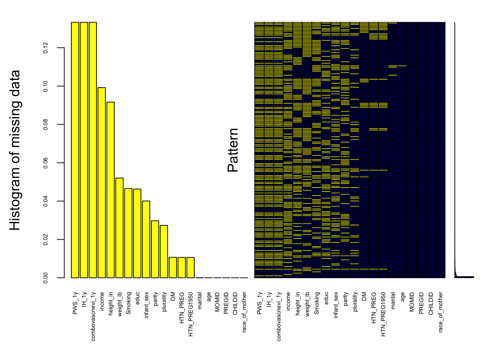
Variables sorted by number of missings:
Variable Count
PWS_1y 1.332332e-01
IH_1y 1.332332e-01
combovascnevi_1y 1.332332e-01
income 9.918348e-02
height_in 9.163773e-02
weight_lb 5.203191e-02
Smoking 4.658846e-02
educ 4.628813e-02
infant_sex 4.007508e-02
parity 2.975129e-02
plurality 2.732989e-02
DM 1.068043e-02
HTN_PREG 1.064289e-02
HTN_PREG1950 1.064289e-02
marital 7.508212e-05
age 1.877053e-05
MOMID 0.000000e+00
PREGID 0.000000e+00
CHILDID 0.000000e+00
race_of_mother 0.000000e+00Next, I created a binary matrix imp_where to identify the locations of the missing values. For the imputation methods, I carefully selected techniques appropriate for each variable type. Continuous variables were imputed using normal linear regression, ensuring that the inherent continuous nature of these data was preserved. Binary categorical variables were imputed using logistic regression. This method was ideal for modeling the probability of one category over another. For other categorical variables without a natural order, I chose polynomial regression imputation. This approach allowed for flexible modeling of relationships among unordered categories, which was essential for variables like hypertension during pregnancy, parity, plurality, income, education level, marital status, and the race of the mother. An initial empty imputation (maxit = 0) was performed to establish the default predictor matrix and methods.
I modified the predictor matrix to reflect the study’s design, ensuring that certain variables were not used as predictors. I clearly defined which variables were treated as outcomes and covariates. Hypertension during pregnancy was the primary exposure variable, and it was included in the list of covariates. This distinction was important to examine its relationship with other covariates accurately. Adjustments to the predictor matrix were made to ensure that covariates predicted each other, as well as the outcome variables predicting each other. This step was crucial for a coherent and integrated imputation process. After saving the predictor matrix and imputation methods to disk, I proceeded with the final imputation. I used the specified imputation methods, predictor matrix, and parameters to generate multiple imputed datasets.
I am using the specified imputation methods, predictor matrix, and parameters to generate multiple imputed datasets. imputation_methods is a list that contains the chosen imputation methods for each variable. predictor_matrix defines how variables predict each other during the imputation process. where = imp_where uses a binary matrix to identify the locations of missing values. Setting m = 5 generates multiple imputations. The seed = 12345 parameter ensures reproducibility by fixing the random seed. A maximum iteration limit of maxit = 50 controls the refinement of imputed values during each iteration. nnet.MaxNWts = 5000 controls the maximum number of weights in the neural network model used for imputation when “logreg” or “polyreg” methods are employed.
iter imp variable
1 1 DM HTN_PREG HTN_PREG1950 weight_lb height_in age Smoking parity plurality income educ marital infant_sex PWS_1y IH_1y combovascnevi_1y
1 2 DM HTN_PREG HTN_PREG1950 weight_lb height_in age Smoking parity plurality income educ marital infant_sex PWS_1y IH_1y combovascnevi_1y
1 3 DM HTN_PREG HTN_PREG1950 weight_lb height_in age Smoking parity plurality income educ marital infant_sex PWS_1y IH_1y combovascnevi_1y
1 4 DM HTN_PREG HTN_PREG1950 weight_lb height_in age Smoking parity plurality income educ marital infant_sex PWS_1y IH_1y combovascnevi_1y
1 5 DM HTN_PREG HTN_PREG1950 weight_lb height_in age Smoking parity plurality income educ marital infant_sex PWS_1y IH_1y combovascnevi_1y
2 1 DM HTN_PREG HTN_PREG1950 weight_lb height_in age Smoking parity plurality income educ marital infant_sex PWS_1y IH_1y combovascnevi_1y
2 2 DM HTN_PREG HTN_PREG1950 weight_lb height_in age Smoking parity plurality income educ marital infant_sex PWS_1y IH_1y combovascnevi_1y
2 3 DM HTN_PREG HTN_PREG1950 weight_lb height_in age Smoking parity plurality income educ marital infant_sex PWS_1y IH_1y combovascnevi_1y
2 4 DM HTN_PREG HTN_PREG1950 weight_lb height_in age Smoking parity plurality income educ marital infant_sex PWS_1y IH_1y combovascnevi_1y
2 5 DM HTN_PREG HTN_PREG1950 weight_lb height_in age Smoking parity plurality income educ marital infant_sex PWS_1y IH_1y combovascnevi_1y
3 1 DM HTN_PREG HTN_PREG1950 weight_lb height_in age Smoking parity plurality income educ marital infant_sex PWS_1y IH_1y combovascnevi_1y
3 2 DM HTN_PREG HTN_PREG1950 weight_lb height_in age Smoking parity plurality income educ marital infant_sex PWS_1y IH_1y combovascnevi_1y
3 3 DM HTN_PREG HTN_PREG1950 weight_lb height_in age Smoking parity plurality income educ marital infant_sex PWS_1y IH_1y combovascnevi_1y
3 4 DM HTN_PREG HTN_PREG1950 weight_lb height_in age Smoking parity plurality income educ marital infant_sex PWS_1y IH_1y combovascnevi_1y
3 5 DM HTN_PREG HTN_PREG1950 weight_lb height_in age Smoking parity plurality income educ marital infant_sex PWS_1y IH_1y combovascnevi_1y
4 1 DM HTN_PREG HTN_PREG1950 weight_lb height_in age Smoking parity plurality income educ marital infant_sex PWS_1y IH_1y combovascnevi_1y
4 2 DM HTN_PREG HTN_PREG1950 weight_lb height_in age Smoking parity plurality income educ marital infant_sex PWS_1y IH_1y combovascnevi_1y
4 3 DM HTN_PREG HTN_PREG1950 weight_lb height_in age Smoking parity plurality income educ marital infant_sex PWS_1y IH_1y combovascnevi_1y
4 4 DM HTN_PREG HTN_PREG1950 weight_lb height_in age Smoking parity plurality income educ marital infant_sex PWS_1y IH_1y combovascnevi_1y
4 5 DM HTN_PREG HTN_PREG1950 weight_lb height_in age Smoking parity plurality income educ marital infant_sex PWS_1y IH_1y combovascnevi_1y
5 1 DM HTN_PREG HTN_PREG1950 weight_lb height_in age Smoking parity plurality income educ marital infant_sex PWS_1y IH_1y combovascnevi_1y
5 2 DM HTN_PREG HTN_PREG1950 weight_lb height_in age Smoking parity plurality income educ marital infant_sex PWS_1y IH_1y combovascnevi_1y
5 3 DM HTN_PREG HTN_PREG1950 weight_lb height_in age Smoking parity plurality income educ marital infant_sex PWS_1y IH_1y combovascnevi_1y
5 4 DM HTN_PREG HTN_PREG1950 weight_lb height_in age Smoking parity plurality income educ marital infant_sex PWS_1y IH_1y combovascnevi_1y
5 5 DM HTN_PREG HTN_PREG1950 weight_lb height_in age Smoking parity plurality income educ marital infant_sex PWS_1y IH_1y combovascnevi_1y
6 1 DM HTN_PREG HTN_PREG1950 weight_lb height_in age Smoking parity plurality income educ marital infant_sex PWS_1y IH_1y combovascnevi_1y
6 2 DM HTN_PREG HTN_PREG1950 weight_lb height_in age Smoking parity plurality income educ marital infant_sex PWS_1y IH_1y combovascnevi_1y
6 3 DM HTN_PREG HTN_PREG1950 weight_lb height_in age Smoking parity plurality income educ marital infant_sex PWS_1y IH_1y combovascnevi_1y
6 4 DM HTN_PREG HTN_PREG1950 weight_lb height_in age Smoking parity plurality income educ marital infant_sex PWS_1y IH_1y combovascnevi_1y
6 5 DM HTN_PREG HTN_PREG1950 weight_lb height_in age Smoking parity plurality income educ marital infant_sex PWS_1y IH_1y combovascnevi_1y
7 1 DM HTN_PREG HTN_PREG1950 weight_lb height_in age Smoking parity plurality income educ marital infant_sex PWS_1y IH_1y combovascnevi_1y
7 2 DM HTN_PREG HTN_PREG1950 weight_lb height_in age Smoking parity plurality income educ marital infant_sex PWS_1y IH_1y combovascnevi_1y
7 3 DM HTN_PREG HTN_PREG1950 weight_lb height_in age Smoking parity plurality income educ marital infant_sex PWS_1y IH_1y combovascnevi_1y
7 4 DM HTN_PREG HTN_PREG1950 weight_lb height_in age Smoking parity plurality income educ marital infant_sex PWS_1y IH_1y combovascnevi_1y
7 5 DM HTN_PREG HTN_PREG1950 weight_lb height_in age Smoking parity plurality income educ marital infant_sex PWS_1y IH_1y combovascnevi_1y
8 1 DM HTN_PREG HTN_PREG1950 weight_lb height_in age Smoking parity plurality income educ marital infant_sex PWS_1y IH_1y combovascnevi_1y
8 2 DM HTN_PREG HTN_PREG1950 weight_lb height_in age Smoking parity plurality income educ marital infant_sex PWS_1y IH_1y combovascnevi_1y
8 3 DM HTN_PREG HTN_PREG1950 weight_lb height_in age Smoking parity plurality income educ marital infant_sex PWS_1y IH_1y combovascnevi_1y
8 4 DM HTN_PREG HTN_PREG1950 weight_lb height_in age Smoking parity plurality income educ marital infant_sex PWS_1y IH_1y combovascnevi_1y
8 5 DM HTN_PREG HTN_PREG1950 weight_lb height_in age Smoking parity plurality income educ marital infant_sex PWS_1y IH_1y combovascnevi_1y
9 1 DM HTN_PREG HTN_PREG1950 weight_lb height_in age Smoking parity plurality income educ marital infant_sex PWS_1y IH_1y combovascnevi_1y
9 2 DM HTN_PREG HTN_PREG1950 weight_lb height_in age Smoking parity plurality income educ marital infant_sex PWS_1y IH_1y combovascnevi_1y
9 3 DM HTN_PREG HTN_PREG1950 weight_lb height_in age Smoking parity plurality income educ marital infant_sex PWS_1y IH_1y combovascnevi_1y
9 4 DM HTN_PREG HTN_PREG1950 weight_lb height_in age Smoking parity plurality income educ marital infant_sex PWS_1y IH_1y combovascnevi_1y
9 5 DM HTN_PREG HTN_PREG1950 weight_lb height_in age Smoking parity plurality income educ marital infant_sex PWS_1y IH_1y combovascnevi_1y
10 1 DM HTN_PREG HTN_PREG1950 weight_lb height_in age Smoking parity plurality income educ marital infant_sex PWS_1y IH_1y combovascnevi_1y
10 2 DM HTN_PREG HTN_PREG1950 weight_lb height_in age Smoking parity plurality income educ marital infant_sex PWS_1y IH_1y combovascnevi_1y
10 3 DM HTN_PREG HTN_PREG1950 weight_lb height_in age Smoking parity plurality income educ marital infant_sex PWS_1y IH_1y combovascnevi_1y
10 4 DM HTN_PREG HTN_PREG1950 weight_lb height_in age Smoking parity plurality income educ marital infant_sex PWS_1y IH_1y combovascnevi_1y
10 5 DM HTN_PREG HTN_PREG1950 weight_lb height_in age Smoking parity plurality income educ marital infant_sex PWS_1y IH_1y combovascnevi_1y
11 1 DM HTN_PREG HTN_PREG1950 weight_lb height_in age Smoking parity plurality income educ marital infant_sex PWS_1y IH_1y combovascnevi_1y
11 2 DM HTN_PREG HTN_PREG1950 weight_lb height_in age Smoking parity plurality income educ marital infant_sex PWS_1y IH_1y combovascnevi_1y
11 3 DM HTN_PREG HTN_PREG1950 weight_lb height_in age Smoking parity plurality income educ marital infant_sex PWS_1y IH_1y combovascnevi_1y
11 4 DM HTN_PREG HTN_PREG1950 weight_lb height_in age Smoking parity plurality income educ marital infant_sex PWS_1y IH_1y combovascnevi_1y
11 5 DM HTN_PREG HTN_PREG1950 weight_lb height_in age Smoking parity plurality income educ marital infant_sex PWS_1y IH_1y combovascnevi_1y
12 1 DM HTN_PREG HTN_PREG1950 weight_lb height_in age Smoking parity plurality income educ marital infant_sex PWS_1y IH_1y combovascnevi_1y
12 2 DM HTN_PREG HTN_PREG1950 weight_lb height_in age Smoking parity plurality income educ marital infant_sex PWS_1y IH_1y combovascnevi_1y
12 3 DM HTN_PREG HTN_PREG1950 weight_lb height_in age Smoking parity plurality income educ marital infant_sex PWS_1y IH_1y combovascnevi_1y
12 4 DM HTN_PREG HTN_PREG1950 weight_lb height_in age Smoking parity plurality income educ marital infant_sex PWS_1y IH_1y combovascnevi_1y
12 5 DM HTN_PREG HTN_PREG1950 weight_lb height_in age Smoking parity plurality income educ marital infant_sex PWS_1y IH_1y combovascnevi_1y
13 1 DM HTN_PREG HTN_PREG1950 weight_lb height_in age Smoking parity plurality income educ marital infant_sex PWS_1y IH_1y combovascnevi_1y
13 2 DM HTN_PREG HTN_PREG1950 weight_lb height_in age Smoking parity plurality income educ marital infant_sex PWS_1y IH_1y combovascnevi_1y
13 3 DM HTN_PREG HTN_PREG1950 weight_lb height_in age Smoking parity plurality income educ marital infant_sex PWS_1y IH_1y combovascnevi_1y
13 4 DM HTN_PREG HTN_PREG1950 weight_lb height_in age Smoking parity plurality income educ marital infant_sex PWS_1y IH_1y combovascnevi_1y
13 5 DM HTN_PREG HTN_PREG1950 weight_lb height_in age Smoking parity plurality income educ marital infant_sex PWS_1y IH_1y combovascnevi_1y
14 1 DM HTN_PREG HTN_PREG1950 weight_lb height_in age Smoking parity plurality income educ marital infant_sex PWS_1y IH_1y combovascnevi_1y
14 2 DM HTN_PREG HTN_PREG1950 weight_lb height_in age Smoking parity plurality income educ marital infant_sex PWS_1y IH_1y combovascnevi_1y
14 3 DM HTN_PREG HTN_PREG1950 weight_lb height_in age Smoking parity plurality income educ marital infant_sex PWS_1y IH_1y combovascnevi_1y
14 4 DM HTN_PREG HTN_PREG1950 weight_lb height_in age Smoking parity plurality income educ marital infant_sex PWS_1y IH_1y combovascnevi_1y
14 5 DM HTN_PREG HTN_PREG1950 weight_lb height_in age Smoking parity plurality income educ marital infant_sex PWS_1y IH_1y combovascnevi_1y
15 1 DM HTN_PREG HTN_PREG1950 weight_lb height_in age Smoking parity plurality income educ marital infant_sex PWS_1y IH_1y combovascnevi_1y
15 2 DM HTN_PREG HTN_PREG1950 weight_lb height_in age Smoking parity plurality income educ marital infant_sex PWS_1y IH_1y combovascnevi_1y
15 3 DM HTN_PREG HTN_PREG1950 weight_lb height_in age Smoking parity plurality income educ marital infant_sex PWS_1y IH_1y combovascnevi_1y
15 4 DM HTN_PREG HTN_PREG1950 weight_lb height_in age Smoking parity plurality income educ marital infant_sex PWS_1y IH_1y combovascnevi_1y
15 5 DM HTN_PREG HTN_PREG1950 weight_lb height_in age Smoking parity plurality income educ marital infant_sex PWS_1y IH_1y combovascnevi_1y
16 1 DM HTN_PREG HTN_PREG1950 weight_lb height_in age Smoking parity plurality income educ marital infant_sex PWS_1y IH_1y combovascnevi_1y
16 2 DM HTN_PREG HTN_PREG1950 weight_lb height_in age Smoking parity plurality income educ marital infant_sex PWS_1y IH_1y combovascnevi_1y
16 3 DM HTN_PREG HTN_PREG1950 weight_lb height_in age Smoking parity plurality income educ marital infant_sex PWS_1y IH_1y combovascnevi_1y
16 4 DM HTN_PREG HTN_PREG1950 weight_lb height_in age Smoking parity plurality income educ marital infant_sex PWS_1y IH_1y combovascnevi_1y
16 5 DM HTN_PREG HTN_PREG1950 weight_lb height_in age Smoking parity plurality income educ marital infant_sex PWS_1y IH_1y combovascnevi_1y
17 1 DM HTN_PREG HTN_PREG1950 weight_lb height_in age Smoking parity plurality income educ marital infant_sex PWS_1y IH_1y combovascnevi_1y
17 2 DM HTN_PREG HTN_PREG1950 weight_lb height_in age Smoking parity plurality income educ marital infant_sex PWS_1y IH_1y combovascnevi_1y
17 3 DM HTN_PREG HTN_PREG1950 weight_lb height_in age Smoking parity plurality income educ marital infant_sex PWS_1y IH_1y combovascnevi_1y
17 4 DM HTN_PREG HTN_PREG1950 weight_lb height_in age Smoking parity plurality income educ marital infant_sex PWS_1y IH_1y combovascnevi_1y
17 5 DM HTN_PREG HTN_PREG1950 weight_lb height_in age Smoking parity plurality income educ marital infant_sex PWS_1y IH_1y combovascnevi_1y
18 1 DM HTN_PREG HTN_PREG1950 weight_lb height_in age Smoking parity plurality income educ marital infant_sex PWS_1y IH_1y combovascnevi_1y
18 2 DM HTN_PREG HTN_PREG1950 weight_lb height_in age Smoking parity plurality income educ marital infant_sex PWS_1y IH_1y combovascnevi_1y
18 3 DM HTN_PREG HTN_PREG1950 weight_lb height_in age Smoking parity plurality income educ marital infant_sex PWS_1y IH_1y combovascnevi_1y
18 4 DM HTN_PREG HTN_PREG1950 weight_lb height_in age Smoking parity plurality income educ marital infant_sex PWS_1y IH_1y combovascnevi_1y
18 5 DM HTN_PREG HTN_PREG1950 weight_lb height_in age Smoking parity plurality income educ marital infant_sex PWS_1y IH_1y combovascnevi_1y
19 1 DM HTN_PREG HTN_PREG1950 weight_lb height_in age Smoking parity plurality income educ marital infant_sex PWS_1y IH_1y combovascnevi_1y
19 2 DM HTN_PREG HTN_PREG1950 weight_lb height_in age Smoking parity plurality income educ marital infant_sex PWS_1y IH_1y combovascnevi_1y
19 3 DM HTN_PREG HTN_PREG1950 weight_lb height_in age Smoking parity plurality income educ marital infant_sex PWS_1y IH_1y combovascnevi_1y
19 4 DM HTN_PREG HTN_PREG1950 weight_lb height_in age Smoking parity plurality income educ marital infant_sex PWS_1y IH_1y combovascnevi_1y
19 5 DM HTN_PREG HTN_PREG1950 weight_lb height_in age Smoking parity plurality income educ marital infant_sex PWS_1y IH_1y combovascnevi_1y
20 1 DM HTN_PREG HTN_PREG1950 weight_lb height_in age Smoking parity plurality income educ marital infant_sex PWS_1y IH_1y combovascnevi_1y
20 2 DM HTN_PREG HTN_PREG1950 weight_lb height_in age Smoking parity plurality income educ marital infant_sex PWS_1y IH_1y combovascnevi_1y
20 3 DM HTN_PREG HTN_PREG1950 weight_lb height_in age Smoking parity plurality income educ marital infant_sex PWS_1y IH_1y combovascnevi_1y
20 4 DM HTN_PREG HTN_PREG1950 weight_lb height_in age Smoking parity plurality income educ marital infant_sex PWS_1y IH_1y combovascnevi_1y
20 5 DM HTN_PREG HTN_PREG1950 weight_lb height_in age Smoking parity plurality income educ marital infant_sex PWS_1y IH_1y combovascnevi_1y
21 1 DM HTN_PREG HTN_PREG1950 weight_lb height_in age Smoking parity plurality income educ marital infant_sex PWS_1y IH_1y combovascnevi_1y
21 2 DM HTN_PREG HTN_PREG1950 weight_lb height_in age Smoking parity plurality income educ marital infant_sex PWS_1y IH_1y combovascnevi_1y
21 3 DM HTN_PREG HTN_PREG1950 weight_lb height_in age Smoking parity plurality income educ marital infant_sex PWS_1y IH_1y combovascnevi_1y
21 4 DM HTN_PREG HTN_PREG1950 weight_lb height_in age Smoking parity plurality income educ marital infant_sex PWS_1y IH_1y combovascnevi_1y
21 5 DM HTN_PREG HTN_PREG1950 weight_lb height_in age Smoking parity plurality income educ marital infant_sex PWS_1y IH_1y combovascnevi_1y
22 1 DM HTN_PREG HTN_PREG1950 weight_lb height_in age Smoking parity plurality income educ marital infant_sex PWS_1y IH_1y combovascnevi_1y
22 2 DM HTN_PREG HTN_PREG1950 weight_lb height_in age Smoking parity plurality income educ marital infant_sex PWS_1y IH_1y combovascnevi_1y
22 3 DM HTN_PREG HTN_PREG1950 weight_lb height_in age Smoking parity plurality income educ marital infant_sex PWS_1y IH_1y combovascnevi_1y
22 4 DM HTN_PREG HTN_PREG1950 weight_lb height_in age Smoking parity plurality income educ marital infant_sex PWS_1y IH_1y combovascnevi_1y
22 5 DM HTN_PREG HTN_PREG1950 weight_lb height_in age Smoking parity plurality income educ marital infant_sex PWS_1y IH_1y combovascnevi_1y
23 1 DM HTN_PREG HTN_PREG1950 weight_lb height_in age Smoking parity plurality income educ marital infant_sex PWS_1y IH_1y combovascnevi_1y
23 2 DM HTN_PREG HTN_PREG1950 weight_lb height_in age Smoking parity plurality income educ marital infant_sex PWS_1y IH_1y combovascnevi_1y
23 3 DM HTN_PREG HTN_PREG1950 weight_lb height_in age Smoking parity plurality income educ marital infant_sex PWS_1y IH_1y combovascnevi_1y
23 4 DM HTN_PREG HTN_PREG1950 weight_lb height_in age Smoking parity plurality income educ marital infant_sex PWS_1y IH_1y combovascnevi_1y
23 5 DM HTN_PREG HTN_PREG1950 weight_lb height_in age Smoking parity plurality income educ marital infant_sex PWS_1y IH_1y combovascnevi_1y
24 1 DM HTN_PREG HTN_PREG1950 weight_lb height_in age Smoking parity plurality income educ marital infant_sex PWS_1y IH_1y combovascnevi_1y
24 2 DM HTN_PREG HTN_PREG1950 weight_lb height_in age Smoking parity plurality income educ marital infant_sex PWS_1y IH_1y combovascnevi_1y
24 3 DM HTN_PREG HTN_PREG1950 weight_lb height_in age Smoking parity plurality income educ marital infant_sex PWS_1y IH_1y combovascnevi_1y
24 4 DM HTN_PREG HTN_PREG1950 weight_lb height_in age Smoking parity plurality income educ marital infant_sex PWS_1y IH_1y combovascnevi_1y
24 5 DM HTN_PREG HTN_PREG1950 weight_lb height_in age Smoking parity plurality income educ marital infant_sex PWS_1y IH_1y combovascnevi_1y
25 1 DM HTN_PREG HTN_PREG1950 weight_lb height_in age Smoking parity plurality income educ marital infant_sex PWS_1y IH_1y combovascnevi_1y
25 2 DM HTN_PREG HTN_PREG1950 weight_lb height_in age Smoking parity plurality income educ marital infant_sex PWS_1y IH_1y combovascnevi_1y
25 3 DM HTN_PREG HTN_PREG1950 weight_lb height_in age Smoking parity plurality income educ marital infant_sex PWS_1y IH_1y combovascnevi_1y
25 4 DM HTN_PREG HTN_PREG1950 weight_lb height_in age Smoking parity plurality income educ marital infant_sex PWS_1y IH_1y combovascnevi_1y
25 5 DM HTN_PREG HTN_PREG1950 weight_lb height_in age Smoking parity plurality income educ marital infant_sex PWS_1y IH_1y combovascnevi_1y
26 1 DM HTN_PREG HTN_PREG1950 weight_lb height_in age Smoking parity plurality income educ marital infant_sex PWS_1y IH_1y combovascnevi_1y
26 2 DM HTN_PREG HTN_PREG1950 weight_lb height_in age Smoking parity plurality income educ marital infant_sex PWS_1y IH_1y combovascnevi_1y
26 3 DM HTN_PREG HTN_PREG1950 weight_lb height_in age Smoking parity plurality income educ marital infant_sex PWS_1y IH_1y combovascnevi_1y
26 4 DM HTN_PREG HTN_PREG1950 weight_lb height_in age Smoking parity plurality income educ marital infant_sex PWS_1y IH_1y combovascnevi_1y
26 5 DM HTN_PREG HTN_PREG1950 weight_lb height_in age Smoking parity plurality income educ marital infant_sex PWS_1y IH_1y combovascnevi_1y
27 1 DM HTN_PREG HTN_PREG1950 weight_lb height_in age Smoking parity plurality income educ marital infant_sex PWS_1y IH_1y combovascnevi_1y
27 2 DM HTN_PREG HTN_PREG1950 weight_lb height_in age Smoking parity plurality income educ marital infant_sex PWS_1y IH_1y combovascnevi_1y
27 3 DM HTN_PREG HTN_PREG1950 weight_lb height_in age Smoking parity plurality income educ marital infant_sex PWS_1y IH_1y combovascnevi_1y
27 4 DM HTN_PREG HTN_PREG1950 weight_lb height_in age Smoking parity plurality income educ marital infant_sex PWS_1y IH_1y combovascnevi_1y
27 5 DM HTN_PREG HTN_PREG1950 weight_lb height_in age Smoking parity plurality income educ marital infant_sex PWS_1y IH_1y combovascnevi_1y
28 1 DM HTN_PREG HTN_PREG1950 weight_lb height_in age Smoking parity plurality income educ marital infant_sex PWS_1y IH_1y combovascnevi_1y
28 2 DM HTN_PREG HTN_PREG1950 weight_lb height_in age Smoking parity plurality income educ marital infant_sex PWS_1y IH_1y combovascnevi_1y
28 3 DM HTN_PREG HTN_PREG1950 weight_lb height_in age Smoking parity plurality income educ marital infant_sex PWS_1y IH_1y combovascnevi_1y
28 4 DM HTN_PREG HTN_PREG1950 weight_lb height_in age Smoking parity plurality income educ marital infant_sex PWS_1y IH_1y combovascnevi_1y
28 5 DM HTN_PREG HTN_PREG1950 weight_lb height_in age Smoking parity plurality income educ marital infant_sex PWS_1y IH_1y combovascnevi_1y
29 1 DM HTN_PREG HTN_PREG1950 weight_lb height_in age Smoking parity plurality income educ marital infant_sex PWS_1y IH_1y combovascnevi_1y
29 2 DM HTN_PREG HTN_PREG1950 weight_lb height_in age Smoking parity plurality income educ marital infant_sex PWS_1y IH_1y combovascnevi_1y
29 3 DM HTN_PREG HTN_PREG1950 weight_lb height_in age Smoking parity plurality income educ marital infant_sex PWS_1y IH_1y combovascnevi_1y
29 4 DM HTN_PREG HTN_PREG1950 weight_lb height_in age Smoking parity plurality income educ marital infant_sex PWS_1y IH_1y combovascnevi_1y
29 5 DM HTN_PREG HTN_PREG1950 weight_lb height_in age Smoking parity plurality income educ marital infant_sex PWS_1y IH_1y combovascnevi_1y
30 1 DM HTN_PREG HTN_PREG1950 weight_lb height_in age Smoking parity plurality income educ marital infant_sex PWS_1y IH_1y combovascnevi_1y
30 2 DM HTN_PREG HTN_PREG1950 weight_lb height_in age Smoking parity plurality income educ marital infant_sex PWS_1y IH_1y combovascnevi_1y
30 3 DM HTN_PREG HTN_PREG1950 weight_lb height_in age Smoking parity plurality income educ marital infant_sex PWS_1y IH_1y combovascnevi_1y
30 4 DM HTN_PREG HTN_PREG1950 weight_lb height_in age Smoking parity plurality income educ marital infant_sex PWS_1y IH_1y combovascnevi_1y
30 5 DM HTN_PREG HTN_PREG1950 weight_lb height_in age Smoking parity plurality income educ marital infant_sex PWS_1y IH_1y combovascnevi_1y
31 1 DM HTN_PREG HTN_PREG1950 weight_lb height_in age Smoking parity plurality income educ marital infant_sex PWS_1y IH_1y combovascnevi_1y
31 2 DM HTN_PREG HTN_PREG1950 weight_lb height_in age Smoking parity plurality income educ marital infant_sex PWS_1y IH_1y combovascnevi_1y
31 3 DM HTN_PREG HTN_PREG1950 weight_lb height_in age Smoking parity plurality income educ marital infant_sex PWS_1y IH_1y combovascnevi_1y
31 4 DM HTN_PREG HTN_PREG1950 weight_lb height_in age Smoking parity plurality income educ marital infant_sex PWS_1y IH_1y combovascnevi_1y
31 5 DM HTN_PREG HTN_PREG1950 weight_lb height_in age Smoking parity plurality income educ marital infant_sex PWS_1y IH_1y combovascnevi_1y
32 1 DM HTN_PREG HTN_PREG1950 weight_lb height_in age Smoking parity plurality income educ marital infant_sex PWS_1y IH_1y combovascnevi_1y
32 2 DM HTN_PREG HTN_PREG1950 weight_lb height_in age Smoking parity plurality income educ marital infant_sex PWS_1y IH_1y combovascnevi_1y
32 3 DM HTN_PREG HTN_PREG1950 weight_lb height_in age Smoking parity plurality income educ marital infant_sex PWS_1y IH_1y combovascnevi_1y
32 4 DM HTN_PREG HTN_PREG1950 weight_lb height_in age Smoking parity plurality income educ marital infant_sex PWS_1y IH_1y combovascnevi_1y
32 5 DM HTN_PREG HTN_PREG1950 weight_lb height_in age Smoking parity plurality income educ marital infant_sex PWS_1y IH_1y combovascnevi_1y
33 1 DM HTN_PREG HTN_PREG1950 weight_lb height_in age Smoking parity plurality income educ marital infant_sex PWS_1y IH_1y combovascnevi_1y
33 2 DM HTN_PREG HTN_PREG1950 weight_lb height_in age Smoking parity plurality income educ marital infant_sex PWS_1y IH_1y combovascnevi_1y
33 3 DM HTN_PREG HTN_PREG1950 weight_lb height_in age Smoking parity plurality income educ marital infant_sex PWS_1y IH_1y combovascnevi_1y
33 4 DM HTN_PREG HTN_PREG1950 weight_lb height_in age Smoking parity plurality income educ marital infant_sex PWS_1y IH_1y combovascnevi_1y
33 5 DM HTN_PREG HTN_PREG1950 weight_lb height_in age Smoking parity plurality income educ marital infant_sex PWS_1y IH_1y combovascnevi_1y
34 1 DM HTN_PREG HTN_PREG1950 weight_lb height_in age Smoking parity plurality income educ marital infant_sex PWS_1y IH_1y combovascnevi_1y
34 2 DM HTN_PREG HTN_PREG1950 weight_lb height_in age Smoking parity plurality income educ marital infant_sex PWS_1y IH_1y combovascnevi_1y
34 3 DM HTN_PREG HTN_PREG1950 weight_lb height_in age Smoking parity plurality income educ marital infant_sex PWS_1y IH_1y combovascnevi_1y
34 4 DM HTN_PREG HTN_PREG1950 weight_lb height_in age Smoking parity plurality income educ marital infant_sex PWS_1y IH_1y combovascnevi_1y
34 5 DM HTN_PREG HTN_PREG1950 weight_lb height_in age Smoking parity plurality income educ marital infant_sex PWS_1y IH_1y combovascnevi_1y
35 1 DM HTN_PREG HTN_PREG1950 weight_lb height_in age Smoking parity plurality income educ marital infant_sex PWS_1y IH_1y combovascnevi_1y
35 2 DM HTN_PREG HTN_PREG1950 weight_lb height_in age Smoking parity plurality income educ marital infant_sex PWS_1y IH_1y combovascnevi_1y
35 3 DM HTN_PREG HTN_PREG1950 weight_lb height_in age Smoking parity plurality income educ marital infant_sex PWS_1y IH_1y combovascnevi_1y
35 4 DM HTN_PREG HTN_PREG1950 weight_lb height_in age Smoking parity plurality income educ marital infant_sex PWS_1y IH_1y combovascnevi_1y
35 5 DM HTN_PREG HTN_PREG1950 weight_lb height_in age Smoking parity plurality income educ marital infant_sex PWS_1y IH_1y combovascnevi_1y
36 1 DM HTN_PREG HTN_PREG1950 weight_lb height_in age Smoking parity plurality income educ marital infant_sex PWS_1y IH_1y combovascnevi_1y
36 2 DM HTN_PREG HTN_PREG1950 weight_lb height_in age Smoking parity plurality income educ marital infant_sex PWS_1y IH_1y combovascnevi_1y
36 3 DM HTN_PREG HTN_PREG1950 weight_lb height_in age Smoking parity plurality income educ marital infant_sex PWS_1y IH_1y combovascnevi_1y
36 4 DM HTN_PREG HTN_PREG1950 weight_lb height_in age Smoking parity plurality income educ marital infant_sex PWS_1y IH_1y combovascnevi_1y
36 5 DM HTN_PREG HTN_PREG1950 weight_lb height_in age Smoking parity plurality income educ marital infant_sex PWS_1y IH_1y combovascnevi_1y
37 1 DM HTN_PREG HTN_PREG1950 weight_lb height_in age Smoking parity plurality income educ marital infant_sex PWS_1y IH_1y combovascnevi_1y
37 2 DM HTN_PREG HTN_PREG1950 weight_lb height_in age Smoking parity plurality income educ marital infant_sex PWS_1y IH_1y combovascnevi_1y
37 3 DM HTN_PREG HTN_PREG1950 weight_lb height_in age Smoking parity plurality income educ marital infant_sex PWS_1y IH_1y combovascnevi_1y
37 4 DM HTN_PREG HTN_PREG1950 weight_lb height_in age Smoking parity plurality income educ marital infant_sex PWS_1y IH_1y combovascnevi_1y
37 5 DM HTN_PREG HTN_PREG1950 weight_lb height_in age Smoking parity plurality income educ marital infant_sex PWS_1y IH_1y combovascnevi_1y
38 1 DM HTN_PREG HTN_PREG1950 weight_lb height_in age Smoking parity plurality income educ marital infant_sex PWS_1y IH_1y combovascnevi_1y
38 2 DM HTN_PREG HTN_PREG1950 weight_lb height_in age Smoking parity plurality income educ marital infant_sex PWS_1y IH_1y combovascnevi_1y
38 3 DM HTN_PREG HTN_PREG1950 weight_lb height_in age Smoking parity plurality income educ marital infant_sex PWS_1y IH_1y combovascnevi_1y
38 4 DM HTN_PREG HTN_PREG1950 weight_lb height_in age Smoking parity plurality income educ marital infant_sex PWS_1y IH_1y combovascnevi_1y
38 5 DM HTN_PREG HTN_PREG1950 weight_lb height_in age Smoking parity plurality income educ marital infant_sex PWS_1y IH_1y combovascnevi_1y
39 1 DM HTN_PREG HTN_PREG1950 weight_lb height_in age Smoking parity plurality income educ marital infant_sex PWS_1y IH_1y combovascnevi_1y
39 2 DM HTN_PREG HTN_PREG1950 weight_lb height_in age Smoking parity plurality income educ marital infant_sex PWS_1y IH_1y combovascnevi_1y
39 3 DM HTN_PREG HTN_PREG1950 weight_lb height_in age Smoking parity plurality income educ marital infant_sex PWS_1y IH_1y combovascnevi_1y
39 4 DM HTN_PREG HTN_PREG1950 weight_lb height_in age Smoking parity plurality income educ marital infant_sex PWS_1y IH_1y combovascnevi_1y
39 5 DM HTN_PREG HTN_PREG1950 weight_lb height_in age Smoking parity plurality income educ marital infant_sex PWS_1y IH_1y combovascnevi_1y
40 1 DM HTN_PREG HTN_PREG1950 weight_lb height_in age Smoking parity plurality income educ marital infant_sex PWS_1y IH_1y combovascnevi_1y
40 2 DM HTN_PREG HTN_PREG1950 weight_lb height_in age Smoking parity plurality income educ marital infant_sex PWS_1y IH_1y combovascnevi_1y
40 3 DM HTN_PREG HTN_PREG1950 weight_lb height_in age Smoking parity plurality income educ marital infant_sex PWS_1y IH_1y combovascnevi_1y
40 4 DM HTN_PREG HTN_PREG1950 weight_lb height_in age Smoking parity plurality income educ marital infant_sex PWS_1y IH_1y combovascnevi_1y
40 5 DM HTN_PREG HTN_PREG1950 weight_lb height_in age Smoking parity plurality income educ marital infant_sex PWS_1y IH_1y combovascnevi_1y
41 1 DM HTN_PREG HTN_PREG1950 weight_lb height_in age Smoking parity plurality income educ marital infant_sex PWS_1y IH_1y combovascnevi_1y
41 2 DM HTN_PREG HTN_PREG1950 weight_lb height_in age Smoking parity plurality income educ marital infant_sex PWS_1y IH_1y combovascnevi_1y
41 3 DM HTN_PREG HTN_PREG1950 weight_lb height_in age Smoking parity plurality income educ marital infant_sex PWS_1y IH_1y combovascnevi_1y
41 4 DM HTN_PREG HTN_PREG1950 weight_lb height_in age Smoking parity plurality income educ marital infant_sex PWS_1y IH_1y combovascnevi_1y
41 5 DM HTN_PREG HTN_PREG1950 weight_lb height_in age Smoking parity plurality income educ marital infant_sex PWS_1y IH_1y combovascnevi_1y
42 1 DM HTN_PREG HTN_PREG1950 weight_lb height_in age Smoking parity plurality income educ marital infant_sex PWS_1y IH_1y combovascnevi_1y
42 2 DM HTN_PREG HTN_PREG1950 weight_lb height_in age Smoking parity plurality income educ marital infant_sex PWS_1y IH_1y combovascnevi_1y
42 3 DM HTN_PREG HTN_PREG1950 weight_lb height_in age Smoking parity plurality income educ marital infant_sex PWS_1y IH_1y combovascnevi_1y
42 4 DM HTN_PREG HTN_PREG1950 weight_lb height_in age Smoking parity plurality income educ marital infant_sex PWS_1y IH_1y combovascnevi_1y
42 5 DM HTN_PREG HTN_PREG1950 weight_lb height_in age Smoking parity plurality income educ marital infant_sex PWS_1y IH_1y combovascnevi_1y
43 1 DM HTN_PREG HTN_PREG1950 weight_lb height_in age Smoking parity plurality income educ marital infant_sex PWS_1y IH_1y combovascnevi_1y
43 2 DM HTN_PREG HTN_PREG1950 weight_lb height_in age Smoking parity plurality income educ marital infant_sex PWS_1y IH_1y combovascnevi_1y
43 3 DM HTN_PREG HTN_PREG1950 weight_lb height_in age Smoking parity plurality income educ marital infant_sex PWS_1y IH_1y combovascnevi_1y
43 4 DM HTN_PREG HTN_PREG1950 weight_lb height_in age Smoking parity plurality income educ marital infant_sex PWS_1y IH_1y combovascnevi_1y
43 5 DM HTN_PREG HTN_PREG1950 weight_lb height_in age Smoking parity plurality income educ marital infant_sex PWS_1y IH_1y combovascnevi_1y
44 1 DM HTN_PREG HTN_PREG1950 weight_lb height_in age Smoking parity plurality income educ marital infant_sex PWS_1y IH_1y combovascnevi_1y
44 2 DM HTN_PREG HTN_PREG1950 weight_lb height_in age Smoking parity plurality income educ marital infant_sex PWS_1y IH_1y combovascnevi_1y
44 3 DM HTN_PREG HTN_PREG1950 weight_lb height_in age Smoking parity plurality income educ marital infant_sex PWS_1y IH_1y combovascnevi_1y
44 4 DM HTN_PREG HTN_PREG1950 weight_lb height_in age Smoking parity plurality income educ marital infant_sex PWS_1y IH_1y combovascnevi_1y
44 5 DM HTN_PREG HTN_PREG1950 weight_lb height_in age Smoking parity plurality income educ marital infant_sex PWS_1y IH_1y combovascnevi_1y
45 1 DM HTN_PREG HTN_PREG1950 weight_lb height_in age Smoking parity plurality income educ marital infant_sex PWS_1y IH_1y combovascnevi_1y
45 2 DM HTN_PREG HTN_PREG1950 weight_lb height_in age Smoking parity plurality income educ marital infant_sex PWS_1y IH_1y combovascnevi_1y
45 3 DM HTN_PREG HTN_PREG1950 weight_lb height_in age Smoking parity plurality income educ marital infant_sex PWS_1y IH_1y combovascnevi_1y
45 4 DM HTN_PREG HTN_PREG1950 weight_lb height_in age Smoking parity plurality income educ marital infant_sex PWS_1y IH_1y combovascnevi_1y
45 5 DM HTN_PREG HTN_PREG1950 weight_lb height_in age Smoking parity plurality income educ marital infant_sex PWS_1y IH_1y combovascnevi_1y
46 1 DM HTN_PREG HTN_PREG1950 weight_lb height_in age Smoking parity plurality income educ marital infant_sex PWS_1y IH_1y combovascnevi_1y
46 2 DM HTN_PREG HTN_PREG1950 weight_lb height_in age Smoking parity plurality income educ marital infant_sex PWS_1y IH_1y combovascnevi_1y
46 3 DM HTN_PREG HTN_PREG1950 weight_lb height_in age Smoking parity plurality income educ marital infant_sex PWS_1y IH_1y combovascnevi_1y
46 4 DM HTN_PREG HTN_PREG1950 weight_lb height_in age Smoking parity plurality income educ marital infant_sex PWS_1y IH_1y combovascnevi_1y
46 5 DM HTN_PREG HTN_PREG1950 weight_lb height_in age Smoking parity plurality income educ marital infant_sex PWS_1y IH_1y combovascnevi_1y
47 1 DM HTN_PREG HTN_PREG1950 weight_lb height_in age Smoking parity plurality income educ marital infant_sex PWS_1y IH_1y combovascnevi_1y
47 2 DM HTN_PREG HTN_PREG1950 weight_lb height_in age Smoking parity plurality income educ marital infant_sex PWS_1y IH_1y combovascnevi_1y
47 3 DM HTN_PREG HTN_PREG1950 weight_lb height_in age Smoking parity plurality income educ marital infant_sex PWS_1y IH_1y combovascnevi_1y
47 4 DM HTN_PREG HTN_PREG1950 weight_lb height_in age Smoking parity plurality income educ marital infant_sex PWS_1y IH_1y combovascnevi_1y
47 5 DM HTN_PREG HTN_PREG1950 weight_lb height_in age Smoking parity plurality income educ marital infant_sex PWS_1y IH_1y combovascnevi_1y
48 1 DM HTN_PREG HTN_PREG1950 weight_lb height_in age Smoking parity plurality income educ marital infant_sex PWS_1y IH_1y combovascnevi_1y
48 2 DM HTN_PREG HTN_PREG1950 weight_lb height_in age Smoking parity plurality income educ marital infant_sex PWS_1y IH_1y combovascnevi_1y
48 3 DM HTN_PREG HTN_PREG1950 weight_lb height_in age Smoking parity plurality income educ marital infant_sex PWS_1y IH_1y combovascnevi_1y
48 4 DM HTN_PREG HTN_PREG1950 weight_lb height_in age Smoking parity plurality income educ marital infant_sex PWS_1y IH_1y combovascnevi_1y
48 5 DM HTN_PREG HTN_PREG1950 weight_lb height_in age Smoking parity plurality income educ marital infant_sex PWS_1y IH_1y combovascnevi_1y
49 1 DM HTN_PREG HTN_PREG1950 weight_lb height_in age Smoking parity plurality income educ marital infant_sex PWS_1y IH_1y combovascnevi_1y
49 2 DM HTN_PREG HTN_PREG1950 weight_lb height_in age Smoking parity plurality income educ marital infant_sex PWS_1y IH_1y combovascnevi_1y
49 3 DM HTN_PREG HTN_PREG1950 weight_lb height_in age Smoking parity plurality income educ marital infant_sex PWS_1y IH_1y combovascnevi_1y
49 4 DM HTN_PREG HTN_PREG1950 weight_lb height_in age Smoking parity plurality income educ marital infant_sex PWS_1y IH_1y combovascnevi_1y
49 5 DM HTN_PREG HTN_PREG1950 weight_lb height_in age Smoking parity plurality income educ marital infant_sex PWS_1y IH_1y combovascnevi_1y
50 1 DM HTN_PREG HTN_PREG1950 weight_lb height_in age Smoking parity plurality income educ marital infant_sex PWS_1y IH_1y combovascnevi_1y
50 2 DM HTN_PREG HTN_PREG1950 weight_lb height_in age Smoking parity plurality income educ marital infant_sex PWS_1y IH_1y combovascnevi_1y
50 3 DM HTN_PREG HTN_PREG1950 weight_lb height_in age Smoking parity plurality income educ marital infant_sex PWS_1y IH_1y combovascnevi_1y
50 4 DM HTN_PREG HTN_PREG1950 weight_lb height_in age Smoking parity plurality income educ marital infant_sex PWS_1y IH_1y combovascnevi_1y
50 5 DM HTN_PREG HTN_PREG1950 weight_lb height_in age Smoking parity plurality income educ marital infant_sex PWS_1y IH_1y combovascnevi_1y- Creating new variables in the pooled dataset: V1 when suspect is treated as absent, V2 when suspect is treated as present, and a composite variable that groups them together. These variables will be used for sensitivity analysis later in the project.
- I recategorized certain covariates to ensure their proper adjustment in the multivariable log binomial models.
Results
- These are two summary tables presenting covariates stratified by hypertension level. The stratification is based on both historical and contemporary definitions of hypertension. The
tbl_summaryfunction is used to generate a summary table (Table 1) based on the datasetcategory_covariates_full. It includes the covariates specified in thecovariatesvariable. The table summarizes various statistics for these covariates, such as means (average values), standard deviations (how much the values vary), counts, percentages, and missing data. The table is stratified or organized by the presence or absence of hypertensive disorders during pregnancy in the year 2023 (indicated by theby = HTN_PREGargument). Similar to Table 1, another summary table (Table 2) is created using thetbl_summaryfunction. This time, the data is stratified by the presence or absence of hypertension, as it was defined in 1950 (by = HTN_PREG1950).
| Overall, N = 53,2751 | Normotensive, N = 48,3151 | Chronic, N = 2,0051 | Gestational, N = 9161 | Preeclampsia, N = 5011 | Superimposed, N = 9711 | Missing Hypertension Data, N = 5671 | |
|---|---|---|---|---|---|---|---|
| Age | 24 (6) | 24 (6) | 28 (7) | 26 (7) | 25 (7) | 29 (7) | 26 (6) |
| Unknown | 1 | 0 | 0 | 0 | 0 | 1 | 0 |
| Annual Income | |||||||
| <=$1,999 | 7,041 (13%) | 6,438 (13%) | 316 (16%) | 88 (9.6%) | 64 (13%) | 132 (14%) | 3 (0.5%) |
| $2,000-$3,999 | 21,152 (40%) | 19,347 (40%) | 839 (42%) | 324 (35%) | 184 (37%) | 454 (47%) | 4 (0.7%) |
| $4,000-$5,999 | 11,658 (22%) | 10,675 (22%) | 428 (21%) | 225 (25%) | 127 (25%) | 199 (20%) | 4 (0.7%) |
| $6,000-$7,999 | 5,104 (9.6%) | 4,650 (9.6%) | 204 (10%) | 128 (14%) | 49 (9.8%) | 73 (7.5%) | 0 (0%) |
| $8,000-$9,999 | 1,813 (3.4%) | 1,612 (3.3%) | 69 (3.4%) | 60 (6.6%) | 30 (6.0%) | 42 (4.3%) | 0 (0%) |
| >=$10,000 | 1,223 (2.3%) | 1,118 (2.3%) | 42 (2.1%) | 31 (3.4%) | 16 (3.2%) | 15 (1.5%) | 1 (0.2%) |
| NA | 5,284 (9.9%) | 4,475 (9.3%) | 107 (5.3%) | 60 (6.6%) | 31 (6.2%) | 56 (5.8%) | 555 (98%) |
| Education | |||||||
| <HS | 9,033 (17%) | 8,092 (17%) | 483 (24%) | 127 (14%) | 88 (18%) | 240 (25%) | 3 (0.5%) |
| Some HS | 20,199 (38%) | 18,564 (38%) | 751 (37%) | 304 (33%) | 186 (37%) | 388 (40%) | 6 (1.1%) |
| HS Grad | 15,424 (29%) | 14,133 (29%) | 541 (27%) | 321 (35%) | 170 (34%) | 254 (26%) | 5 (0.9%) |
| >=Some College | 6,153 (12%) | 5,706 (12%) | 176 (8.8%) | 145 (16%) | 54 (11%) | 71 (7.3%) | 1 (0.2%) |
| NA | 2,466 (4.6%) | 1,820 (3.8%) | 54 (2.7%) | 19 (2.1%) | 3 (0.6%) | 18 (1.9%) | 552 (97%) |
| Marital Status | |||||||
| Single | 7,788 (15%) | 7,229 (15%) | 214 (11%) | 122 (13%) | 106 (21%) | 100 (10%) | 17 (3.0%) |
| Married/Common Law | 41,146 (77%) | 37,241 (77%) | 1,545 (77%) | 735 (80%) | 358 (71%) | 729 (75%) | 538 (95%) |
| Widowed/Divorced/Separated | 4,337 (8.1%) | 3,843 (8.0%) | 246 (12%) | 59 (6.4%) | 37 (7.4%) | 141 (15%) | 11 (1.9%) |
| NA | 4 (<0.1%) | 2 (<0.1%) | 0 (0%) | 0 (0%) | 0 (0%) | 1 (0.1%) | 1 (0.2%) |
| Pre-Pregnancy BMI (kg/m^2) | 22.8 (4.3) | 22.5 (4.0) | 25.7 (6.5) | 25.4 (5.9) | 25.3 (5.9) | 27.4 (7.0) | NA (NA) |
| Unknown | 5,609 | 4,622 | 147 | 115 | 58 | 100 | 567 |
| Pre-Pregnancy BMI Category | |||||||
| Underweight | 4,498 (8.4%) | 4,317 (8.9%) | 104 (5.2%) | 28 (3.1%) | 22 (4.4%) | 27 (2.8%) | 0 (0%) |
| Healthy Weight | 32,707 (61%) | 30,721 (64%) | 945 (47%) | 435 (47%) | 234 (47%) | 372 (38%) | 0 (0%) |
| Overweight | 7,314 (14%) | 6,365 (13%) | 437 (22%) | 189 (21%) | 105 (21%) | 218 (22%) | 0 (0%) |
| Obesity | 3,147 (5.9%) | 2,290 (4.7%) | 372 (19%) | 149 (16%) | 82 (16%) | 254 (26%) | 0 (0%) |
| NA | 5,609 (11%) | 4,622 (9.6%) | 147 (7.3%) | 115 (13%) | 58 (12%) | 100 (10%) | 567 (100%) |
| Smoking (Number of Cigarettes/Day) | |||||||
| Non-Smoker | 27,548 (52%) | 25,031 (52%) | 1,118 (56%) | 533 (58%) | 302 (60%) | 550 (57%) | 14 (2.5%) |
| 1-19 (<1 pack/day) | 15,575 (29%) | 14,398 (30%) | 559 (28%) | 221 (24%) | 123 (25%) | 268 (28%) | 6 (1.1%) |
| 20+ (1+ pack/day) | 7,670 (14%) | 7,088 (15%) | 258 (13%) | 130 (14%) | 62 (12%) | 128 (13%) | 4 (0.7%) |
| NA | 2,482 (4.7%) | 1,798 (3.7%) | 70 (3.5%) | 32 (3.5%) | 14 (2.8%) | 25 (2.6%) | 543 (96%) |
| Diabetes Status | |||||||
| Normoglycemic | 51,842 (97%) | 47,586 (98%) | 1,951 (97%) | 903 (99%) | 483 (96%) | 906 (93%) | 13 (2.3%) |
| Pre-Pregnancy Diabetes | 864 (1.6%) | 714 (1.5%) | 54 (2.7%) | 13 (1.4%) | 18 (3.6%) | 65 (6.7%) | 0 (0%) |
| NA | 569 (1.1%) | 15 (<0.1%) | 0 (0%) | 0 (0%) | 0 (0%) | 0 (0%) | 554 (98%) |
| Number of times given birth | |||||||
| 0 | 15,724 (30%) | 14,591 (30%) | 323 (16%) | 391 (43%) | 239 (48%) | 172 (18%) | 8 (1.4%) |
| 1 | 11,720 (22%) | 11,078 (23%) | 286 (14%) | 145 (16%) | 64 (13%) | 141 (15%) | 6 (1.1%) |
| 2 | 8,333 (16%) | 7,764 (16%) | 281 (14%) | 97 (11%) | 41 (8.2%) | 148 (15%) | 2 (0.4%) |
| 3 | 5,736 (11%) | 5,231 (11%) | 249 (12%) | 82 (9.0%) | 52 (10%) | 122 (13%) | 0 (0%) |
| 4+ | 10,177 (19%) | 8,664 (18%) | 836 (42%) | 192 (21%) | 105 (21%) | 378 (39%) | 2 (0.4%) |
| NA | 1,585 (3.0%) | 987 (2.0%) | 30 (1.5%) | 9 (1.0%) | 0 (0%) | 10 (1.0%) | 549 (97%) |
| Plurality | |||||||
| Singleton | 50,741 (95%) | 46,455 (96%) | 1,957 (98%) | 886 (97%) | 486 (97%) | 940 (97%) | 17 (3.0%) |
| Twins, Triplets, or Quadruplets | 1,078 (2.0%) | 967 (2.0%) | 36 (1.8%) | 30 (3.3%) | 15 (3.0%) | 30 (3.1%) | 0 (0%) |
| NA | 1,456 (2.7%) | 893 (1.8%) | 12 (0.6%) | 0 (0%) | 0 (0%) | 1 (0.1%) | 550 (97%) |
| Sex of Infant | |||||||
| Male | 25,962 (49%) | 23,756 (49%) | 997 (50%) | 493 (54%) | 238 (48%) | 470 (48%) | 8 (1.4%) |
| Female | 25,178 (47%) | 23,031 (48%) | 963 (48%) | 421 (46%) | 262 (52%) | 496 (51%) | 5 (0.9%) |
| NA | 2,135 (4.0%) | 1,528 (3.2%) | 45 (2.2%) | 2 (0.2%) | 1 (0.2%) | 5 (0.5%) | 554 (98%) |
| Ethnicity | |||||||
| White | 25,074 (47%) | 22,818 (47%) | 641 (32%) | 563 (61%) | 266 (53%) | 269 (28%) | 517 (91%) |
| Black | 24,287 (46%) | 21,694 (45%) | 1,333 (66%) | 330 (36%) | 216 (43%) | 675 (70%) | 39 (6.9%) |
| Puerto Rican | 3,387 (6.4%) | 3,301 (6.8%) | 25 (1.2%) | 18 (2.0%) | 17 (3.4%) | 20 (2.1%) | 6 (1.1%) |
| Other | 527 (1.0%) | 502 (1.0%) | 6 (0.3%) | 5 (0.5%) | 2 (0.4%) | 7 (0.7%) | 5 (0.9%) |
| 1 Mean (SD); n (%) | |||||||
| Overall, N = 33,9491 | Normotensive, N = 23,6391 | Chronic, N = 01 | Gestational, N = 01 | Preeclampsia, N = 9,7431 | Superimposed, N = 01 | Missing Hypertension Data, N = 5671 | |
|---|---|---|---|---|---|---|---|
| Age | 24 (6) | 24 (6) | NA (NA) | NA (NA) | 23 (6) | NA (NA) | 26 (6) |
| Annual Income | |||||||
| <=$1,999 | 4,777 (14%) | 3,162 (13%) | 0 (NA%) | 0 (NA%) | 1,612 (17%) | 0 (NA%) | 3 (0.5%) |
| $2,000-$3,999 | 13,728 (40%) | 9,577 (41%) | 0 (NA%) | 0 (NA%) | 4,147 (43%) | 0 (NA%) | 4 (0.7%) |
| $4,000-$5,999 | 6,907 (20%) | 4,944 (21%) | 0 (NA%) | 0 (NA%) | 1,959 (20%) | 0 (NA%) | 4 (0.7%) |
| $6,000-$7,999 | 2,861 (8.4%) | 2,036 (8.6%) | 0 (NA%) | 0 (NA%) | 825 (8.5%) | 0 (NA%) | 0 (0%) |
| $8,000-$9,999 | 955 (2.8%) | 670 (2.8%) | 0 (NA%) | 0 (NA%) | 285 (2.9%) | 0 (NA%) | 0 (0%) |
| >=$10,000 | 649 (1.9%) | 455 (1.9%) | 0 (NA%) | 0 (NA%) | 193 (2.0%) | 0 (NA%) | 1 (0.2%) |
| NA | 4,072 (12%) | 2,795 (12%) | 0 (NA%) | 0 (NA%) | 722 (7.4%) | 0 (NA%) | 555 (98%) |
| Education | |||||||
| <HS | 5,700 (17%) | 3,842 (16%) | 0 (NA%) | 0 (NA%) | 1,855 (19%) | 0 (NA%) | 3 (0.5%) |
| Some HS | 13,355 (39%) | 9,270 (39%) | 0 (NA%) | 0 (NA%) | 4,079 (42%) | 0 (NA%) | 6 (1.1%) |
| HS Grad | 9,375 (28%) | 6,652 (28%) | 0 (NA%) | 0 (NA%) | 2,718 (28%) | 0 (NA%) | 5 (0.9%) |
| >=Some College | 3,450 (10%) | 2,534 (11%) | 0 (NA%) | 0 (NA%) | 915 (9.4%) | 0 (NA%) | 1 (0.2%) |
| NA | 2,069 (6.1%) | 1,341 (5.7%) | 0 (NA%) | 0 (NA%) | 176 (1.8%) | 0 (NA%) | 552 (97%) |
| Marital Status | |||||||
| Single | 5,413 (16%) | 3,232 (14%) | 0 (NA%) | 0 (NA%) | 2,164 (22%) | 0 (NA%) | 17 (3.0%) |
| Married/Common Law | 25,605 (75%) | 18,375 (78%) | 0 (NA%) | 0 (NA%) | 6,692 (69%) | 0 (NA%) | 538 (95%) |
| Widowed/Divorced/Separated | 2,928 (8.6%) | 2,031 (8.6%) | 0 (NA%) | 0 (NA%) | 886 (9.1%) | 0 (NA%) | 11 (1.9%) |
| NA | 3 (<0.1%) | 1 (<0.1%) | 0 (NA%) | 0 (NA%) | 1 (<0.1%) | 0 (NA%) | 1 (0.2%) |
| Pre-Pregnancy BMI (kg/m^2) | 22.5 (4.0) | 22.3 (3.7) | NA (NA) | NA (NA) | 23.2 (4.5) | NA (NA) | NA (NA) |
| Unknown | 3,736 | 2,500 | 0 | 0 | 669 | 0 | 567 |
| Pre-Pregnancy BMI Category | |||||||
| Underweight | 2,899 (8.5%) | 2,172 (9.2%) | 0 (NA%) | 0 (NA%) | 727 (7.5%) | 0 (NA%) | 0 (0%) |
| Healthy Weight | 21,152 (62%) | 15,082 (64%) | 0 (NA%) | 0 (NA%) | 6,070 (62%) | 0 (NA%) | 0 (0%) |
| Overweight | 4,485 (13%) | 2,955 (13%) | 0 (NA%) | 0 (NA%) | 1,530 (16%) | 0 (NA%) | 0 (0%) |
| Obesity | 1,677 (4.9%) | 930 (3.9%) | 0 (NA%) | 0 (NA%) | 747 (7.7%) | 0 (NA%) | 0 (0%) |
| NA | 3,736 (11%) | 2,500 (11%) | 0 (NA%) | 0 (NA%) | 669 (6.9%) | 0 (NA%) | 567 (100%) |
| Smoking (Number of Cigarettes/Day) | |||||||
| Non-Smoker | 17,165 (51%) | 11,781 (50%) | 0 (NA%) | 0 (NA%) | 5,370 (55%) | 0 (NA%) | 14 (2.5%) |
| 1-19 (<1 pack/day) | 10,064 (30%) | 7,116 (30%) | 0 (NA%) | 0 (NA%) | 2,942 (30%) | 0 (NA%) | 6 (1.1%) |
| 20+ (1+ pack/day) | 4,808 (14%) | 3,639 (15%) | 0 (NA%) | 0 (NA%) | 1,165 (12%) | 0 (NA%) | 4 (0.7%) |
| NA | 1,912 (5.6%) | 1,103 (4.7%) | 0 (NA%) | 0 (NA%) | 266 (2.7%) | 0 (NA%) | 543 (96%) |
| Diabetes Status | |||||||
| Normoglycemic | 33,043 (97%) | 23,422 (99%) | 0 (NA%) | 0 (NA%) | 9,608 (99%) | 0 (NA%) | 13 (2.3%) |
| Pre-Pregnancy Diabetes | 337 (1.0%) | 203 (0.9%) | 0 (NA%) | 0 (NA%) | 134 (1.4%) | 0 (NA%) | 0 (0%) |
| NA | 569 (1.7%) | 14 (<0.1%) | 0 (NA%) | 0 (NA%) | 1 (<0.1%) | 0 (NA%) | 554 (98%) |
| Number of times given birth | |||||||
| 0 | 9,808 (29%) | 5,770 (24%) | 0 (NA%) | 0 (NA%) | 4,030 (41%) | 0 (NA%) | 8 (1.4%) |
| 1 | 7,609 (22%) | 5,760 (24%) | 0 (NA%) | 0 (NA%) | 1,843 (19%) | 0 (NA%) | 6 (1.1%) |
| 2 | 5,302 (16%) | 4,063 (17%) | 0 (NA%) | 0 (NA%) | 1,237 (13%) | 0 (NA%) | 2 (0.4%) |
| 3 | 3,612 (11%) | 2,720 (12%) | 0 (NA%) | 0 (NA%) | 892 (9.2%) | 0 (NA%) | 0 (0%) |
| 4+ | 6,245 (18%) | 4,577 (19%) | 0 (NA%) | 0 (NA%) | 1,666 (17%) | 0 (NA%) | 2 (0.4%) |
| NA | 1,373 (4.0%) | 749 (3.2%) | 0 (NA%) | 0 (NA%) | 75 (0.8%) | 0 (NA%) | 549 (97%) |
| Plurality | |||||||
| Singleton | 31,934 (94%) | 22,484 (95%) | 0 (NA%) | 0 (NA%) | 9,433 (97%) | 0 (NA%) | 17 (3.0%) |
| Twins, Triplets, or Quadruplets | 695 (2.0%) | 389 (1.6%) | 0 (NA%) | 0 (NA%) | 306 (3.1%) | 0 (NA%) | 0 (0%) |
| NA | 1,320 (3.9%) | 766 (3.2%) | 0 (NA%) | 0 (NA%) | 4 (<0.1%) | 0 (NA%) | 550 (97%) |
| Sex of Infant | |||||||
| Male | 16,255 (48%) | 11,337 (48%) | 0 (NA%) | 0 (NA%) | 4,910 (50%) | 0 (NA%) | 8 (1.4%) |
| Female | 15,857 (47%) | 11,026 (47%) | 0 (NA%) | 0 (NA%) | 4,826 (50%) | 0 (NA%) | 5 (0.9%) |
| NA | 1,837 (5.4%) | 1,276 (5.4%) | 0 (NA%) | 0 (NA%) | 7 (<0.1%) | 0 (NA%) | 554 (98%) |
| Ethnicity | |||||||
| White | 15,322 (45%) | 11,030 (47%) | 0 (NA%) | 0 (NA%) | 3,775 (39%) | 0 (NA%) | 517 (91%) |
| Black | 15,970 (47%) | 10,619 (45%) | 0 (NA%) | 0 (NA%) | 5,312 (55%) | 0 (NA%) | 39 (6.9%) |
| Puerto Rican | 2,299 (6.8%) | 1,719 (7.3%) | 0 (NA%) | 0 (NA%) | 574 (5.9%) | 0 (NA%) | 6 (1.1%) |
| Other | 358 (1.1%) | 271 (1.1%) | 0 (NA%) | 0 (NA%) | 82 (0.8%) | 0 (NA%) | 5 (0.9%) |
| 1 Mean (SD); n (%) | |||||||
- These are visualizations that describe the summary tables.
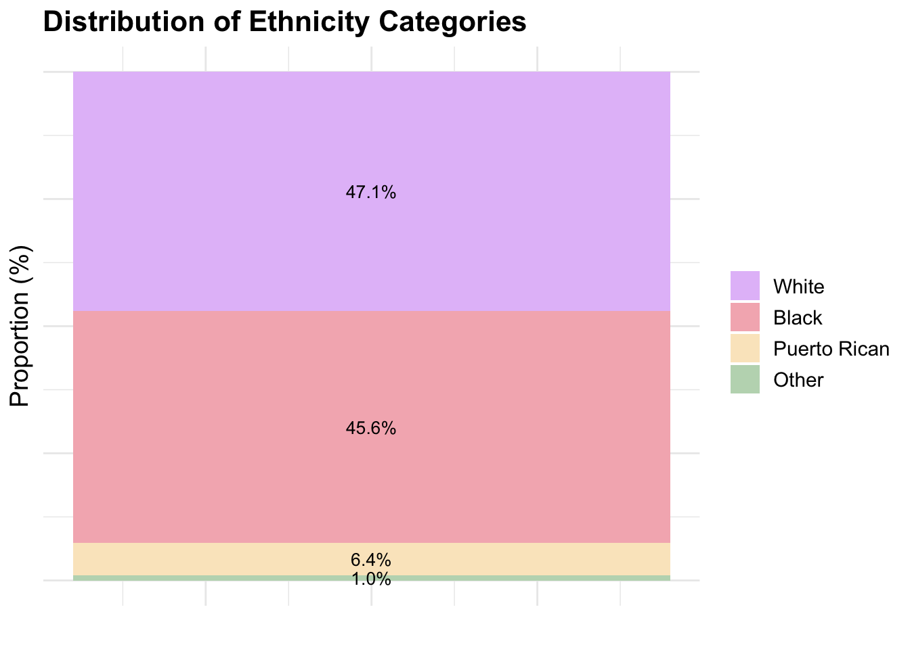
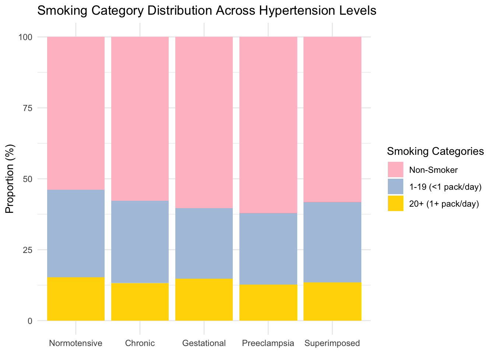
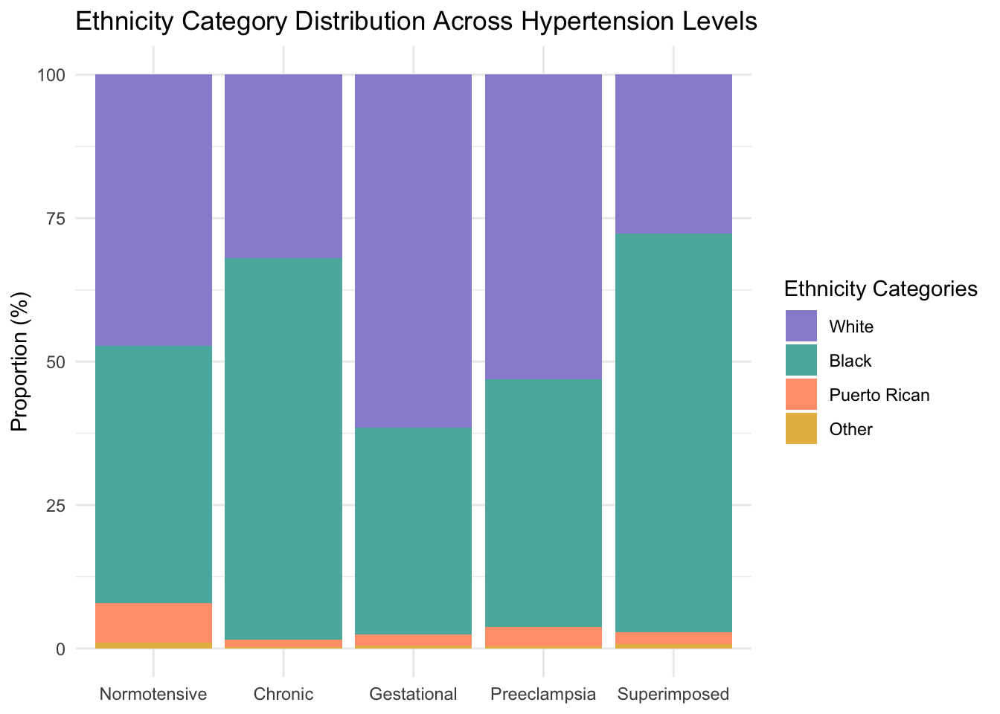
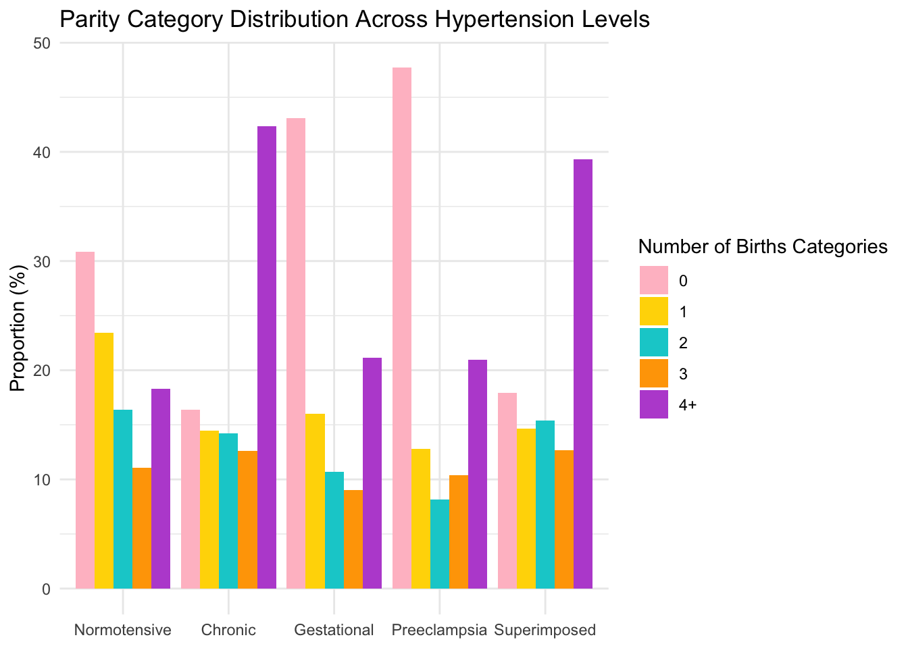
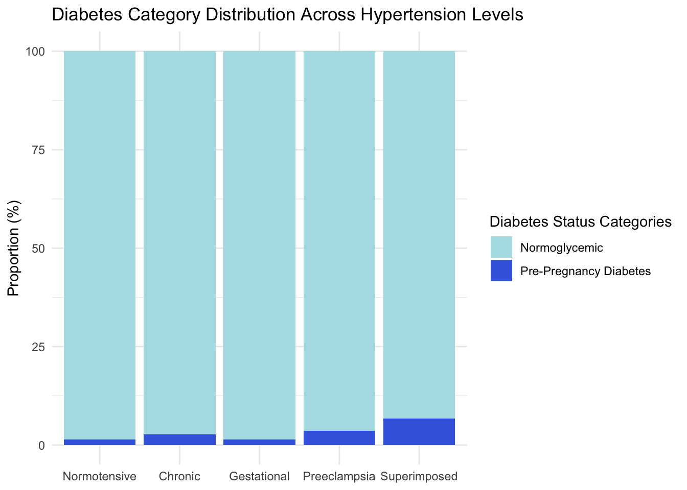
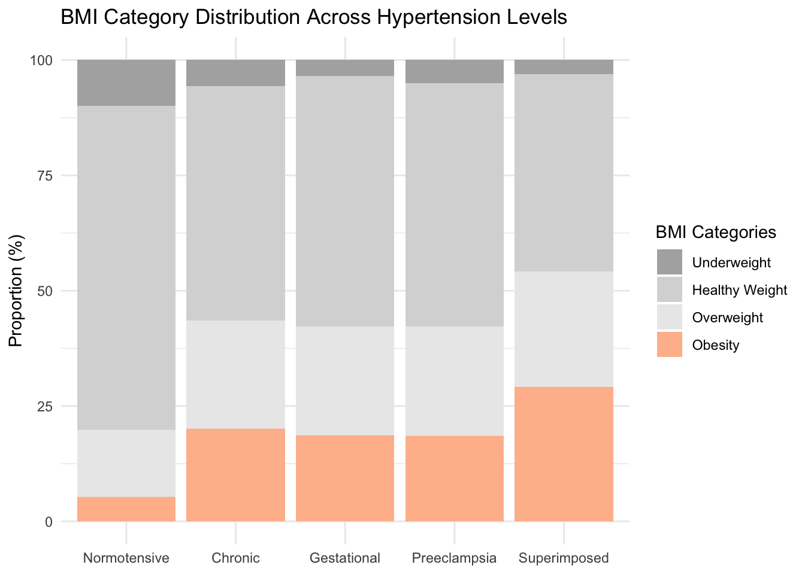
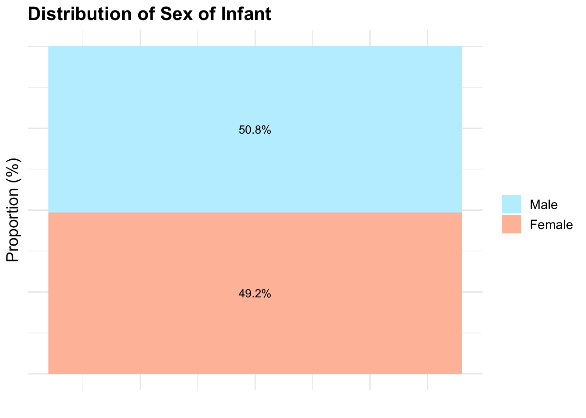
- This is stacked bar plot depicting the distribution of participants based on each hypertension definition to illustrate the differences in distribution. After merging and organizing the data, I calculated the proportions of diagnoses for each hypertension category and converted these proportions into percentages. To make the data suitable for visualization, I reshaped it into a long format and defined colors for the forthcoming bar chart. The resulting bar chart, created using the
ggplot2package, effectively illustrates how the diagnosis of hypertension has transformed over this 73-year period, emphasizing shifts in diagnostic criteria and their impact on the distribution of hypertension categories.
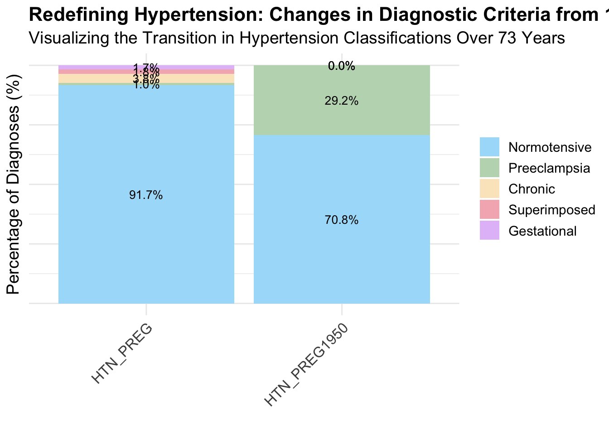
- I have generated tables to display the counts of the vascular nevi outcome. Initially, I created duplicate variables in the
mice_datadata frame for specific variables such asPWS_1y,IH_1y,combovascnevi_1y, andHTN_PREG1950. These duplicate variables have the “_copy” suffix added to their names. Then, I categorized the values in theHTN_PREG_copyvariable into different categories such as “Normotensive,” “Chronic Hypertension,” “Gestational Hypertension,” “Preeclampsia,” “Superimposed Preeclampsia,” and “Missing Outcome Data.” I also renamed variables in themice_datadata frame to provide more descriptive labels, making it easier to interpret the data. Lastly, I generated summary tables (mice_data_summary_2023andmice_data_summary_1950) that provide counts and percentages of specific variables, including “Strawberry Hemangioma @ 1 Year,” “Port-Wine Stain @ 1 Year,” and “Vascular Nevi @ 1 Year (Combined),” categorized by hypertension levels.
| Overall, N = 53,2751 | Normotensive, N = 48,3151 | Chronic Hypertension, N = 2,0051 | Gestational Hypertension, N = 9161 | Preeclampsia, N = 5011 | Superimposed Preeclampsia, N = 9711 | Missing Outcome Data, N = 5671 | |
|---|---|---|---|---|---|---|---|
| Strawberry Hemangioma @ 1 Year | |||||||
| Normal | 45,222 (85%) | 41,361 (86%) | 1,722 (86%) | 820 (90%) | 440 (88%) | 870 (90%) | 9 (1.6%) |
| Definite | 721 (1.4%) | 655 (1.4%) | 27 (1.3%) | 15 (1.6%) | 15 (3.0%) | 9 (0.9%) | 0 (0%) |
| Suspect | 234 (0.4%) | 218 (0.5%) | 4 (0.2%) | 5 (0.5%) | 2 (0.4%) | 5 (0.5%) | 0 (0%) |
| Missing Outcome Data | 7,098 (13%) | 6,081 (13%) | 252 (13%) | 76 (8.3%) | 44 (8.8%) | 87 (9.0%) | 558 (98%) |
| Port-Wine Stain @ 1 Year | |||||||
| Normal | 45,821 (86%) | 41,907 (87%) | 1,744 (87%) | 833 (91%) | 452 (90%) | 876 (90%) | 9 (1.6%) |
| Definite | 271 (0.5%) | 244 (0.5%) | 9 (0.4%) | 6 (0.7%) | 4 (0.8%) | 8 (0.8%) | 0 (0%) |
| Suspect | 85 (0.2%) | 83 (0.2%) | 0 (0%) | 1 (0.1%) | 1 (0.2%) | 0 (0%) | 0 (0%) |
| Missing Outcome Data | 7,098 (13%) | 6,081 (13%) | 252 (13%) | 76 (8.3%) | 44 (8.8%) | 87 (9.0%) | 558 (98%) |
| Vascular Nevi @ 1 Year (Combined) | |||||||
| Normal | 44,898 (84%) | 41,064 (85%) | 1,713 (85%) | 815 (89%) | 435 (87%) | 862 (89%) | 9 (1.6%) |
| Definite | 979 (1.8%) | 888 (1.8%) | 36 (1.8%) | 19 (2.1%) | 19 (3.8%) | 17 (1.8%) | 0 (0%) |
| Suspect | 300 (0.6%) | 282 (0.6%) | 4 (0.2%) | 6 (0.7%) | 3 (0.6%) | 5 (0.5%) | 0 (0%) |
| Missing Outcome Data | 7,098 (13%) | 6,081 (13%) | 252 (13%) | 76 (8.3%) | 44 (8.8%) | 87 (9.0%) | 558 (98%) |
| 1 n (%) | |||||||
| Overall, N = 53,2751 | Normotensive, N = 23,6391 | Chronic, N = 4,3981 | Gestational, N = 11,5941 | Preeclampsia, N = 9,7431 | Superimposed, N = 3,3341 | Missing Outcome Data, N = 5671 | |
|---|---|---|---|---|---|---|---|
| Strawberry Hemangioma @ 1 Year | |||||||
| Normal | 45,222 (85%) | 19,439 (82%) | 3,618 (82%) | 10,396 (90%) | 8,761 (90%) | 2,999 (90%) | 9 (1.6%) |
| Definite | 721 (1.4%) | 286 (1.2%) | 68 (1.5%) | 173 (1.5%) | 132 (1.4%) | 62 (1.9%) | 0 (0%) |
| Suspect | 234 (0.4%) | 96 (0.4%) | 28 (0.6%) | 60 (0.5%) | 34 (0.3%) | 16 (0.5%) | 0 (0%) |
| Missing Outcome Data | 7,098 (13%) | 3,818 (16%) | 684 (16%) | 965 (8.3%) | 816 (8.4%) | 257 (7.7%) | 558 (98%) |
| Port-Wine Stain @ 1 Year | |||||||
| Normal | 45,821 (86%) | 19,683 (83%) | 3,695 (84%) | 10,541 (91%) | 8,850 (91%) | 3,043 (91%) | 9 (1.6%) |
| Definite | 271 (0.5%) | 102 (0.4%) | 16 (0.4%) | 65 (0.6%) | 59 (0.6%) | 29 (0.9%) | 0 (0%) |
| Suspect | 85 (0.2%) | 36 (0.2%) | 3 (<0.1%) | 23 (0.2%) | 18 (0.2%) | 5 (0.1%) | 0 (0%) |
| Missing Outcome Data | 7,098 (13%) | 3,818 (16%) | 684 (16%) | 965 (8.3%) | 816 (8.4%) | 257 (7.7%) | 558 (98%) |
| Vascular Nevi @ 1 Year (Combined) | |||||||
| Normal | 44,898 (84%) | 19,315 (82%) | 3,601 (82%) | 10,320 (89%) | 8,686 (89%) | 2,967 (89%) | 9 (1.6%) |
| Definite | 979 (1.8%) | 385 (1.6%) | 83 (1.9%) | 231 (2.0%) | 190 (2.0%) | 90 (2.7%) | 0 (0%) |
| Suspect | 300 (0.6%) | 121 (0.5%) | 30 (0.7%) | 78 (0.7%) | 51 (0.5%) | 20 (0.6%) | 0 (0%) |
| Missing Outcome Data | 7,098 (13%) | 3,818 (16%) | 684 (16%) | 965 (8.3%) | 816 (8.4%) | 257 (7.7%) | 558 (98%) |
| 1 n (%) | |||||||
- The following two code chunks contain log binomial models. In this code, I defined a function called
calculate_unadjusted_pooled_summarythat calculates unadjusted pooled summaries for different disease outcomes. The function takes as input a dataset (data), an outcome variable (outcome), and a disease name (disease_name). Inside the function, I first create a logistic regression model using theglmfunction to analyze the relationship between the outcome and a binary variable representing hypertension in 1950 (HTN_PREG1950). I extract summary statistics, including estimates, standard errors, and relative risks, from the model results. I then calculate confidence intervals for the relative risks based on a specified confidence level (in this case, 95%) and store these values in the summary dataframe. Additional columns such as “type,” “disease,” and “acog_year” are added to the summary dataframe to indicate the type of analysis, the disease name, and the year of ACOG guidelines being considered (1950 in this case). Next, I create an empty list calledresult_listto store the results of unadjusted pooled summaries. I define vectors of outcome variables and disease names to iterate through. For each outcome variable and disease name, I call thecalculate_unadjusted_pooled_summaryfunction, print the results, and append them to theresult_list. After processing all the outcome variables, I combine the individual dataframes inresult_listinto a single dataframe namedunadj_PWSIH_1950. Finally, I select and filter specific columns of interest, resulting in a refined dataframe that contains the relevant information for further analysis and presentation. The second chunk does the same thing but for 2023. The two chunks after the second chunk are also the same thing but covariates were adjusted for in the models.
- The next two code chunks are the same as the previous two code chunks, but they include additional covariates in the log-binomial models for adjustment.
| term | relative_risks | ci_lower | ci_upper | p.value | type | disease | acog_year | display |
|---|---|---|---|---|---|---|---|---|
| Chronic Hypertension | 0.70 | 0.22 | 1.19 | 0.15 | Adjusted | PWS_1y_V1 | 1950 | 0.7 ( 0.22 , 1.19 ) |
| Gestational Hypertension | 0.98 | 0.59 | 1.37 | 0.91 | Adjusted | PWS_1y_V1 | 1950 | 0.98 ( 0.59 , 1.37 ) |
| Preeclampsia | 1.26 | 0.86 | 1.67 | 0.26 | Adjusted | PWS_1y_V1 | 1950 | 1.26 ( 0.86 , 1.67 ) |
| Superimposed Preeclampsia | 1.64 | 1.13 | 2.15 | 0.07 | Adjusted | PWS_1y_V1 | 1950 | 1.64 ( 1.13 , 2.15 ) |
| Chronic Hypertension | 1.01 | 0.74 | 1.27 | 0.96 | Adjusted | IH_1y_V1 | 1950 | 1.01 ( 0.74 , 1.27 ) |
| Gestational Hypertension | 1.04 | 0.85 | 1.23 | 0.68 | Adjusted | IH_1y_V1 | 1950 | 1.04 ( 0.85 , 1.23 ) |
| Preeclampsia | 1.12 | 0.91 | 1.32 | 0.29 | Adjusted | IH_1y_V1 | 1950 | 1.12 ( 0.91 , 1.32 ) |
| Superimposed Preeclampsia | 1.34 | 1.02 | 1.66 | 0.07 | Adjusted | IH_1y_V1 | 1950 | 1.34 ( 1.02 , 1.66 ) |
| Chronic Hypertension | 0.62 | 0.18 | 1.07 | <0.05 | Adjusted | PWS_1y_V2 | 1950 | 0.62 ( 0.18 , 1.07 ) |
| Gestational Hypertension | 1.00 | 0.70 | 1.30 | 1 | Adjusted | PWS_1y_V2 | 1950 | 1 ( 0.7 , 1.3 ) |
| Preeclampsia | 1.23 | 0.90 | 1.56 | 0.23 | Adjusted | PWS_1y_V2 | 1950 | 1.23 ( 0.9 , 1.56 ) |
| Superimposed Preeclampsia | 1.47 | 1.01 | 1.92 | 0.11 | Adjusted | PWS_1y_V2 | 1950 | 1.47 ( 1.01 , 1.92 ) |
| Chronic Hypertension | 1.03 | 0.80 | 1.27 | 0.77 | Adjusted | IH_1y_V2 | 1950 | 1.03 ( 0.8 , 1.27 ) |
| Gestational Hypertension | 1.04 | 0.87 | 1.20 | 0.68 | Adjusted | IH_1y_V2 | 1950 | 1.04 ( 0.87 , 1.2 ) |
| Preeclampsia | 1.04 | 0.86 | 1.22 | 0.67 | Adjusted | IH_1y_V2 | 1950 | 1.04 ( 0.86 , 1.22 ) |
| Superimposed Preeclampsia | 1.24 | 0.97 | 1.51 | 0.12 | Adjusted | IH_1y_V2 | 1950 | 1.24 ( 0.97 , 1.51 ) |
| Chronic Hypertension | 0.92 | 0.69 | 1.16 | 0.51 | Adjusted | gp_VN_1y_V1 | 1950 | 0.92 ( 0.69 , 1.16 ) |
| Gestational Hypertension | 1.01 | 0.84 | 1.19 | 0.89 | Adjusted | gp_VN_1y_V1 | 1950 | 1.01 ( 0.84 , 1.19 ) |
| Preeclampsia | 1.16 | 0.98 | 1.34 | 0.1 | Adjusted | gp_VN_1y_V1 | 1950 | 1.16 ( 0.98 , 1.34 ) |
| Superimposed Preeclampsia | 1.43 | 1.19 | 1.67 | <0.005 | Adjusted | gp_VN_1y_V1 | 1950 | 1.43 ( 1.19 , 1.67 ) |
| Chronic Hypertension | 1.17 | 0.48 | 1.87 | 0.65 | Adjusted | PWS_1y_V1 | 2023 | 1.17 ( 0.48 , 1.87 ) |
| Gestational Hypertension | 0.94 | 0.11 | 1.77 | 0.89 | Adjusted | PWS_1y_V1 | 2023 | 0.94 ( 0.11 , 1.77 ) |
| Preeclampsia | 1.40 | 0.42 | 2.37 | 0.5 | Adjusted | PWS_1y_V1 | 2023 | 1.4 ( 0.42 , 2.37 ) |
| Superimposed Preeclampsia | 2.09 | 1.36 | 2.82 | <0.05 | Adjusted | PWS_1y_V1 | 2023 | 2.09 ( 1.36 , 2.82 ) |
| Chronic Hypertension | 1.32 | 0.95 | 1.68 | 0.14 | Adjusted | IH_1y_V1 | 2023 | 1.32 ( 0.95 , 1.68 ) |
| Gestational Hypertension | 0.97 | 0.44 | 1.50 | 0.91 | Adjusted | IH_1y_V1 | 2023 | 0.97 ( 0.44 , 1.5 ) |
| Preeclampsia | 1.90 | 1.35 | 2.44 | <0.05 | Adjusted | IH_1y_V1 | 2023 | 1.9 ( 1.35 , 2.44 ) |
| Superimposed Preeclampsia | 0.98 | 0.32 | 1.65 | 0.96 | Adjusted | IH_1y_V1 | 2023 | 0.98 ( 0.32 , 1.65 ) |
| Chronic Hypertension | 0.90 | 0.22 | 1.57 | 0.75 | Adjusted | PWS_1y_V2 | 2023 | 0.9 ( 0.22 , 1.57 ) |
| Gestational Hypertension | 0.82 | 0.06 | 1.59 | 0.62 | Adjusted | PWS_1y_V2 | 2023 | 0.82 ( 0.06 , 1.59 ) |
| Preeclampsia | 1.36 | 0.50 | 2.22 | 0.48 | Adjusted | PWS_1y_V2 | 2023 | 1.36 ( 0.5 , 2.22 ) |
| Superimposed Preeclampsia | 1.64 | 0.91 | 2.38 | 0.19 | Adjusted | PWS_1y_V2 | 2023 | 1.64 ( 0.91 , 2.38 ) |
| Chronic Hypertension | 1.16 | 0.81 | 1.52 | 0.4 | Adjusted | IH_1y_V2 | 2023 | 1.16 ( 0.81 , 1.52 ) |
| Gestational Hypertension | 0.96 | 0.51 | 1.42 | 0.87 | Adjusted | IH_1y_V2 | 2023 | 0.96 ( 0.51 , 1.42 ) |
| Preeclampsia | 1.58 | 1.07 | 2.09 | 0.08 | Adjusted | IH_1y_V2 | 2023 | 1.58 ( 1.07 , 2.09 ) |
| Superimposed Preeclampsia | 1.07 | 0.57 | 1.58 | 0.79 | Adjusted | IH_1y_V2 | 2023 | 1.07 ( 0.57 , 1.58 ) |
| Chronic Hypertension | 1.30 | 0.97 | 1.62 | 0.12 | Adjusted | gp_VN_1y_V1 | 2023 | 1.3 ( 0.97 , 1.62 ) |
| Gestational Hypertension | 0.88 | 0.41 | 1.36 | 0.61 | Adjusted | gp_VN_1y_V1 | 2023 | 0.88 ( 0.41 , 1.36 ) |
| Preeclampsia | 1.80 | 1.33 | 2.27 | <0.05 | Adjusted | gp_VN_1y_V1 | 2023 | 1.8 ( 1.33 , 2.27 ) |
| Superimposed Preeclampsia | 1.30 | 0.81 | 1.78 | 0.29 | Adjusted | gp_VN_1y_V1 | 2023 | 1.3 ( 0.81 , 1.78 ) |
| Chronic Hypertension | 0.81 | 0.33 | 1.29 | 0.39 | Unadjusted | PWS_1y_V1 | 1950 | 0.81 ( 0.33 , 1.29 ) |
| Gestational Hypertension | 1.06 | 0.67 | 1.45 | 0.78 | Unadjusted | PWS_1y_V1 | 1950 | 1.06 ( 0.67 , 1.45 ) |
| Preeclampsia | 1.16 | 0.78 | 1.54 | 0.46 | Unadjusted | PWS_1y_V1 | 1950 | 1.16 ( 0.78 , 1.54 ) |
| Superimposed Preeclampsia | 1.58 | 1.10 | 2.06 | 0.07 | Unadjusted | PWS_1y_V1 | 1950 | 1.58 ( 1.1 , 2.06 ) |
| Chronic Hypertension | 1.19 | 0.93 | 1.46 | 0.19 | Unadjusted | IH_1y_V1 | 1950 | 1.19 ( 0.93 , 1.46 ) |
| Gestational Hypertension | 1.13 | 0.94 | 1.32 | 0.22 | Unadjusted | IH_1y_V1 | 1950 | 1.13 ( 0.94 , 1.32 ) |
| Preeclampsia | 1.02 | 0.81 | 1.22 | 0.87 | Unadjusted | IH_1y_V1 | 1950 | 1.02 ( 0.81 , 1.22 ) |
| Superimposed Preeclampsia | 1.35 | 1.05 | 1.65 | 0.06 | Unadjusted | IH_1y_V1 | 1950 | 1.35 ( 1.05 , 1.65 ) |
| Chronic Hypertension | 0.72 | 0.27 | 1.16 | 0.14 | Unadjusted | PWS_1y_V2 | 1950 | 0.72 ( 0.27 , 1.16 ) |
| Gestational Hypertension | 1.09 | 0.78 | 1.39 | 0.6 | Unadjusted | PWS_1y_V2 | 1950 | 1.09 ( 0.78 , 1.39 ) |
| Preeclampsia | 1.13 | 0.81 | 1.44 | 0.47 | Unadjusted | PWS_1y_V2 | 1950 | 1.13 ( 0.81 , 1.44 ) |
| Superimposed Preeclampsia | 1.40 | 0.99 | 1.82 | 0.11 | Unadjusted | PWS_1y_V2 | 1950 | 1.4 ( 0.99 , 1.82 ) |
| Chronic Hypertension | 1.24 | 1.01 | 1.47 | 0.07 | Unadjusted | IH_1y_V2 | 1950 | 1.24 ( 1.01 , 1.47 ) |
| Gestational Hypertension | 1.12 | 0.95 | 1.29 | 0.18 | Unadjusted | IH_1y_V2 | 1950 | 1.12 ( 0.95 , 1.29 ) |
| Preeclampsia | 0.95 | 0.77 | 1.13 | 0.59 | Unadjusted | IH_1y_V2 | 1950 | 0.95 ( 0.77 , 1.13 ) |
| Superimposed Preeclampsia | 1.28 | 1.01 | 1.54 | 0.07 | Unadjusted | IH_1y_V2 | 1950 | 1.28 ( 1.01 , 1.54 ) |
| Chronic Hypertension | 1.09 | 0.85 | 1.32 | 0.48 | Unadjusted | gp_VN_1y_V1 | 1950 | 1.09 ( 0.85 , 1.32 ) |
| Gestational Hypertension | 1.09 | 0.92 | 1.27 | 0.3 | Unadjusted | gp_VN_1y_V1 | 1950 | 1.09 ( 0.92 , 1.27 ) |
| Preeclampsia | 1.06 | 0.89 | 1.23 | 0.51 | Unadjusted | gp_VN_1y_V1 | 1950 | 1.06 ( 0.89 , 1.23 ) |
| Superimposed Preeclampsia | 1.41 | 1.19 | 1.64 | <0.005 | Unadjusted | gp_VN_1y_V1 | 1950 | 1.41 ( 1.19 , 1.64 ) |
| Chronic Hypertension | 0.89 | 0.22 | 1.55 | 0.72 | Unadjusted | PWS_1y_V1 | 2023 | 0.89 ( 0.22 , 1.55 ) |
| Gestational Hypertension | 1.10 | 0.28 | 1.93 | 0.82 | Unadjusted | PWS_1y_V1 | 2023 | 1.1 ( 0.28 , 1.93 ) |
| Preeclampsia | 1.48 | 0.51 | 2.45 | 0.43 | Unadjusted | PWS_1y_V1 | 2023 | 1.48 ( 0.51 , 2.45 ) |
| Superimposed Preeclampsia | 1.42 | 0.72 | 2.13 | 0.33 | Unadjusted | PWS_1y_V1 | 2023 | 1.42 ( 0.72 , 2.13 ) |
| Chronic Hypertension | 1.01 | 0.65 | 1.37 | 0.95 | Unadjusted | IH_1y_V1 | 2023 | 1.01 ( 0.65 , 1.37 ) |
| Gestational Hypertension | 1.14 | 0.61 | 1.67 | 0.63 | Unadjusted | IH_1y_V1 | 2023 | 1.14 ( 0.61 , 1.67 ) |
| Preeclampsia | 2.05 | 1.52 | 2.58 | <0.01 | Unadjusted | IH_1y_V1 | 2023 | 2.05 ( 1.52 , 2.58 ) |
| Superimposed Preeclampsia | 0.72 | 0.07 | 1.36 | 0.31 | Unadjusted | IH_1y_V1 | 2023 | 0.72 ( 0.07 , 1.36 ) |
| Chronic Hypertension | 0.66 | 0.01 | 1.32 | 0.22 | Unadjusted | PWS_1y_V2 | 2023 | 0.66 ( 0.01 , 1.32 ) |
| Gestational Hypertension | 0.97 | 0.21 | 1.72 | 0.93 | Unadjusted | PWS_1y_V2 | 2023 | 0.97 ( 0.21 , 1.72 ) |
| Preeclampsia | 1.47 | 0.62 | 2.32 | 0.37 | Unadjusted | PWS_1y_V2 | 2023 | 1.47 ( 0.62 , 2.32 ) |
| Superimposed Preeclampsia | 1.09 | 0.38 | 1.80 | 0.81 | Unadjusted | PWS_1y_V2 | 2023 | 1.09 ( 0.38 , 1.8 ) |
| Chronic Hypertension | 0.90 | 0.56 | 1.25 | 0.57 | Unadjusted | IH_1y_V2 | 2023 | 0.9 ( 0.56 , 1.25 ) |
| Gestational Hypertension | 1.14 | 0.69 | 1.59 | 0.58 | Unadjusted | IH_1y_V2 | 2023 | 1.14 ( 0.69 , 1.59 ) |
| Preeclampsia | 1.73 | 1.23 | 2.22 | <0.05 | Unadjusted | IH_1y_V2 | 2023 | 1.73 ( 1.23 , 2.22 ) |
| Superimposed Preeclampsia | 0.81 | 0.32 | 1.31 | 0.41 | Unadjusted | IH_1y_V2 | 2023 | 0.81 ( 0.32 , 1.31 ) |
| Chronic Hypertension | 0.99 | 0.67 | 1.31 | 0.94 | Unadjusted | gp_VN_1y_V1 | 2023 | 0.99 ( 0.67 , 1.31 ) |
| Gestational Hypertension | 1.04 | 0.56 | 1.51 | 0.88 | Unadjusted | gp_VN_1y_V1 | 2023 | 1.04 ( 0.56 , 1.51 ) |
| Preeclampsia | 1.92 | 1.46 | 2.38 | <0.01 | Unadjusted | gp_VN_1y_V1 | 2023 | 1.92 ( 1.46 , 2.38 ) |
| Superimposed Preeclampsia | 0.92 | 0.44 | 1.39 | 0.73 | Unadjusted | gp_VN_1y_V1 | 2023 | 0.92 ( 0.44 , 1.39 ) |
- I am preparing the data frames from the results section for a sensitivity analysis involving two versions, V1 and V2, of vascular nevi classification based on definiteness and suspicion. In my primary analysis, I use V1. However, in V2, suspected cases are classified as present. The aim is to assess the accuracy of these classifications for rare outcomes. Initially, I created a data frame called
V1V2_dfby filtering data from theadj_and_unadj_PWSIH_FULLdataset. Specifically, I selected data for the year 2023 and for specific diseases (PWS_1y_V1, IH_1y_V1, PWS_1y_V2, IH_1y_V2) that fall under the “Adjusted” category. Then, I used thepivot_widerfunction to transform this data into a wider format, creating a new data frame calledV1V2_wider. Next, I created another data frame calledhistoric_dfby filtering data for the years 1950 and 2023, and specific diseases (PWS_1y_V1 and IH_1y_V1) from theadj_and_unadj_PWSIH_FULLdataset. Again, I used thepivot_widerfunction to reshape this data into a wide format, resulting in thehistoric_widerdata frame. Lastly, I focused on data for the year 2023 and selected specific diseases (PWS_1y_V1, IH_1y_V1, gp_VN_1y_V1) from theadj_and_unadj_PWSIH_FULLdataset. I then used thepivot_widerfunction to transform this data into the ‘wider’ format, providing a structured representation of the information for further analysis and visualization.
- The following four plots compare Relative Risk for Port Wine Stains (PWS) and Infantile Hemangiomas (IH) under two different hypertension definitions (1950 and 2023) and under misclassification. In the provided code, I first filtered the dataset
adj_and_unadj_PWSIH_FULLto select specific data points based on criteria such asacog_yearbeing either “1950” or “2023,”diseasebeing “IH_1y_V1,” andtypebeing “adjusted.” This subset of data was then used to create a comparative plot using theggplot2package in R. In this plot, I compared relative risks (relative_risks) for two different years (1950 and 2023) with corresponding confidence intervals (ci_lowerandci_upper). The plot utilizes distinct colors and shapes to differentiate between the years, providing a visual comparison of relative risks associated with hypertension definitions. Additionally, I customized the plot’s appearance, including titles, axis labels, colors, shapes, and text sizes, to enhance its clarity and readability. The vertical dashed line atxintercept = 1serves as a reference point, and data labels are included to display the relative risks for each data point. The next three plots do the same exact thing.
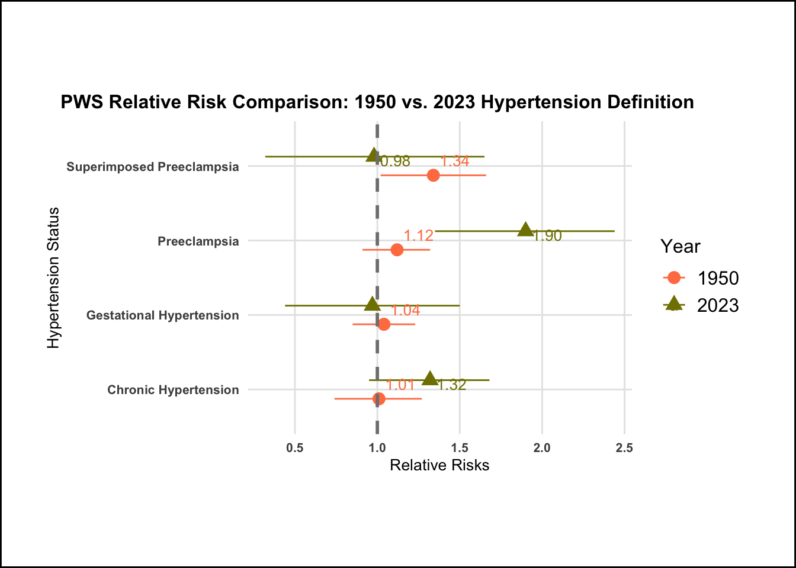
The plot illustrates the relative risks of each hypertension disorder, with the reference group being normotensive. When applying the 1950s definitions, it becomes evident that all hypertensive disorders are linked to PWS. Notably, the most notable change occurs with preeclampsia, where the relative risk rises significantly, from 1.12 to 1.90, when transitioning from the 1950s criteria to the 2023 criteria. This shift reflects the less stringent criteria for diagnosing preeclampsia in 2023, allowing a broader range of cases to be included. Additionally, there’s a noteworthy difference in the gestational age window for defining chronic hypertension. In the 1950s, this window was set at 24 weeks, compared to the current 20-week definition. Consequently, the RR using the 1950s definition is lower, as it encompasses a more diverse population. Furthermore, it’s worth mentioning that the confidence intervals for the 2023 definitions are notably wider, indicating increased variability in the data. Among these associations, only the link between preeclampsia and PWS remains statistically significant.
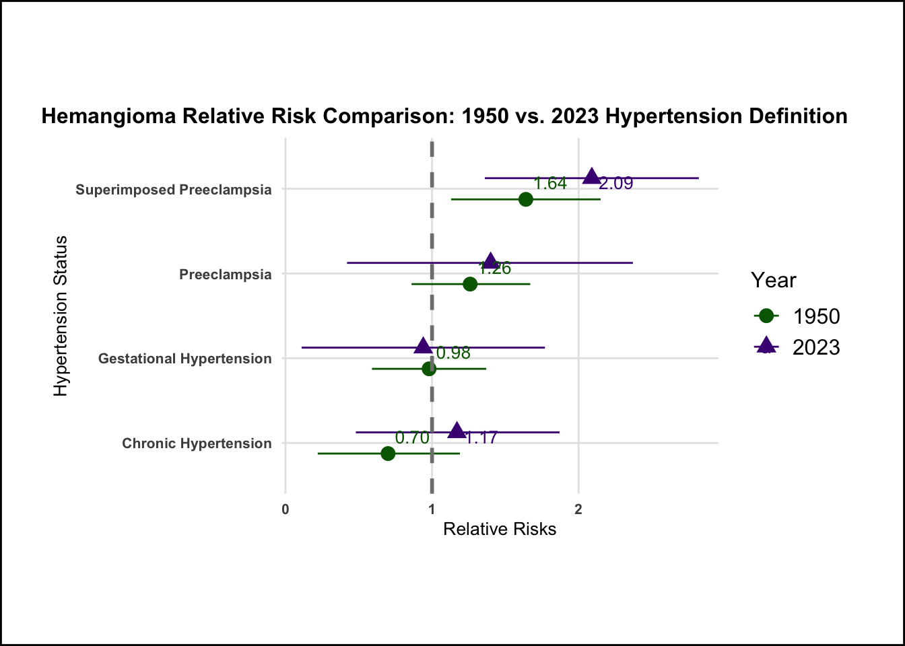
There is a noticeable difference in how preeclampsia impacts infantile hemangiomas compared to Port Wine Stains. However, the most significant change is observed in cases of chronic hypertension. When applying the 1950s definition, the relative risk stands at 0.70, but with the 2023 definition, it increases to 1.17, surpassing the RR = 1 threshold. Additionally, it’s important to note that the confidence intervals are considerably wider when using the 2023 definition. Superimposed preeclampsia demonstrates an additive effect due to the dose-dependent relationship it has, combining chronic hypertension and preeclampsia. This effect varies between different populations. However, this effect isn’t as pronounced in PWS, which is likely attributed to the smaller sample size for PWS, as it is a rarer outcome compared to IH.
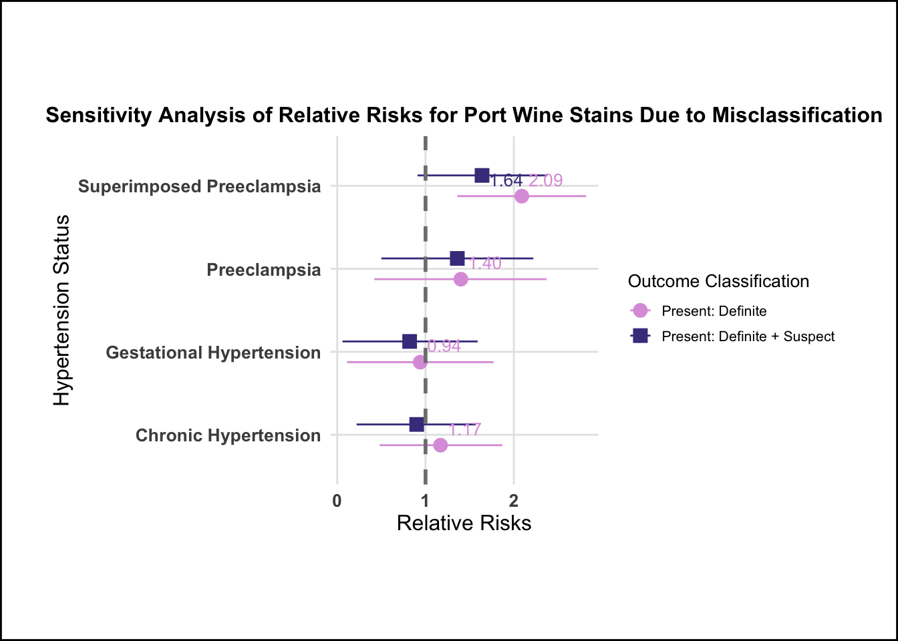
This plot illustrates how the relative risks change when employing different classification criteria. As previously mentioned, V1 denotes the classification where vascular nevi are deemed present only in the definite cases, while V2 extends this classification to include both definite and suspected cases. It’s noteworthy that all the RRs for V2 tend to bias towards the null, indicating a tendency for attenuation to the null when a less precise classification occurs. This observation suggests that the classification of PWS was effectively executed during the 1950-1970s, with a stronger association seen in V1 compared to V2.

The tendency for attenuation toward the null is also observed in the case of hemangiomas, with the exception of superimposed preeclampsia. However, the difference RR is minimal in this context.
Conclusion
In conclusion, my study, titled “A Comparative Analysis of Historical vs. Contemporary Definitions of Hypertension on Vascular Nevi Risk Assessment,” highlights the relative risk differences in a rare pediatric outcome when different definitions of hypertension are applied. To conduct this investigation, I conducted a secondary analysis using data from the Collaborative Perinatal Project (CPP), a comprehensive prospective cohort study conducted from 1959 to 1966. This extensive study spanned 12 U.S. medical centers and involved 48,197 pregnant women, resulting in approximately 59.3k pregnancies. I curated a dataset from the master datafile, which contained over 1,200 variables, by selecting those of particular interest. To address missing data, I employed the Multiple Imputation by Chained Equations (MICE) method, ensuring the integrity of my analysis.
My primary focus was on calculating relative risks of vascular nevi using log-binomial models, shedding light on how different definitions of hypertension, especially in a historical context, impact risk assessments. I specifically examined two aspects:
Chronic Hypertension: A comparison between the definitions from 1950 and 2023 revealed a shift from diagnosis before 24 weeks to before 20 weeks of gestation.
Preeclampsia: I observed that the 1950 definition was more rigid compared to the 2023 definition. This reflected advancements in medical knowledge, diagnostic technology, and a growing trend toward personalized and early intervention in prenatal care. The significance of my findings is underscored by the understanding that changes in diagnostic criteria can significantly influence risk assessments in research studies, particularly when utilizing health record data to create new study variables. Consequently, the categorization of different hypertension groups varies depending on the definitions applied.
There are several limitations to consider in this study:
Accuracy of Hypertension Data: One limitation lies in the accuracy of collecting hypertension levels. Given that the data span both the 1950s and the present day, there may be discrepancies in the techniques used for measuring hypertension. Changes in measurement methods over time could introduce variability in the data that needs to be accounted for.
Binary Variable for Vascular Nevi: Another limitation is the binary nature of the variable used for vascular nevi. The data only indicate whether vascular nevi were present or absent, without providing more detailed information. This limited granularity may restrict the depth of our analysis and the insights we can derive from it.
Rare Outcomes for Vascular Nevi: Additionally, the rarity of outcomes related to vascular nevi presents a challenge. Rare outcomes can make it difficult to conduct statistically robust analyses, as the sample size may not be sufficient to detect significant associations or trends. In this line of research, achieving adequate statistical power can be particularly challenging due to the infrequency of these outcomes.
Notable findings from my study included:
Preeclampsia: When applying the more stringent 1950 definition of PE, the relative risks for Port Wine Stains showed a more pronounced increase compared to Infantile Hemangiomas.
Chronic Hypertension: A notable shift was observed as a result of the expanded gestational age window for diagnosis, leading to an increase in the relative risks for both conditions when using the 1950 definition of chronic hypertension. The difference in relative risk for IH even crossed the threshold of RR = 1.
Combining definite and suspected cases into the variable for present vascular nevi revealed an attenuation toward the null.
In the broader context, my study underscores the importance of historical perspectives in epidemiological research, as they provide valuable insights into the evolution of diagnostic criteria over time. This enhanced understanding of disease risk factors can contribute to more accurate risk assessments and better-informed healthcare decisions.